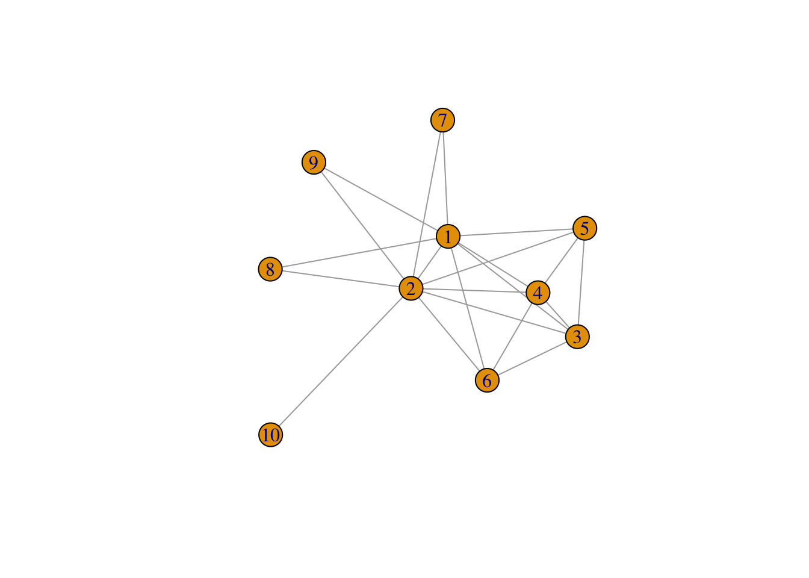
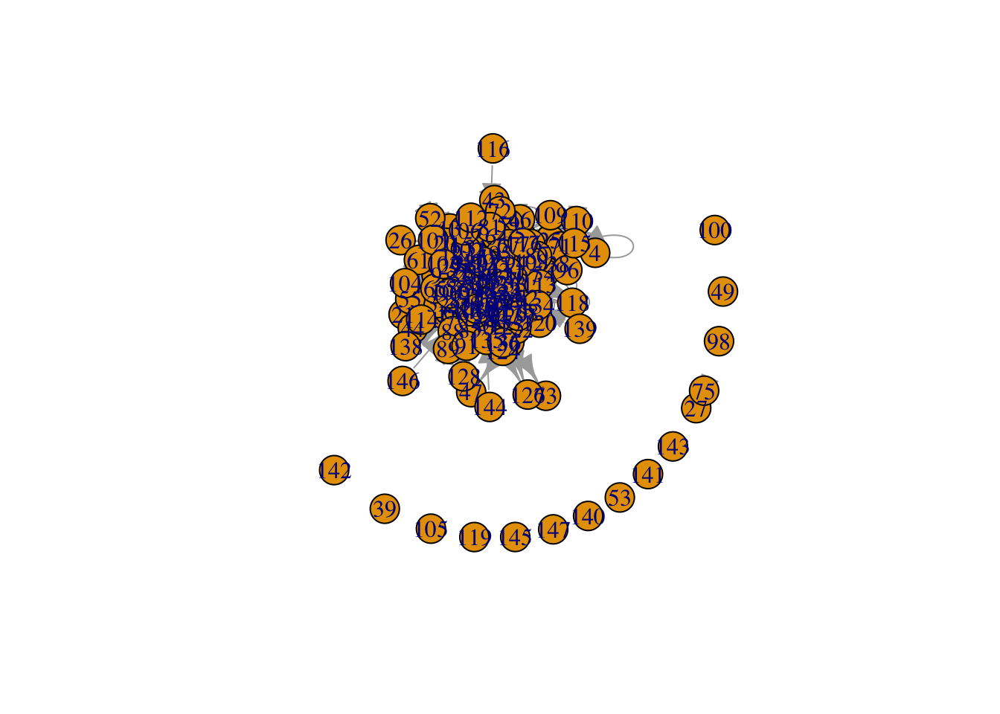

1 Elaboration on Introduction and Network Visualization
For my research on interdisciplinarity in collaboration networks, it is useful to proceed stepwise. For now, I think I need the following steps:
My descriptive research question is:
RQ1: did collaboration networks become more interdisciplinary over time, i.e. did the structure of the collaboration network change over time with regards to the frequency/proportion of interdisciplinary collaborations?
- I think this means that I should gather all collaboration partners of all sociology staff-members of the RU at t1.
- Then, I need to gather all collaboration partners of all sociology staff-members of the RU at t2.
- Then, I need some measure of interdisciplinarity as network characteristic (e.g.@luvzar2014community).
My explanatory research question is:
RQ2: to what extent does increasing interdisciplinarity at the macro-level(=network) lead to selective/partial clustering at the micro level?
So, this question is about how structural factors lead to clustering around some individuals, or how network characteristics may lead to some individuals acting as collaboration-brokers. Or: are there selection-effects of researchers who are interdisciplinary-focused?
- To engage with this question, I think it is necessary to gather relationship characteristics. So, after determining the degree of interdisciplinarity of the network, I could look at the ego-net level. I expect that interdisciplinary collaborations on the macro-level have a kind of mushrooming effect on relations on the micro-level, as interdisciplinary research collaborations automatically mean new connections (at departments, faculties, etc.). Following this I could, for example, look at the consequences (in terms of homophily, for example) if the network indeed turns out to be clustered around interdisciplinarity. This would result in the observation that researchers who engage in interdisciplinary research a lot are more likely to engage in even more interdisciplinary research, and researchers who do not regularly engage in interdisciplinary research become more ‘isolated’. This would result in less in- and out-degrees. DOES THIS MAKE SENSE???
NOTES: look at openAlex at how their logic works with disciplinarity. ## Notes Week 4
We did not yet cover whole network characteristics. Of course, clustering in ego-nets will differ from socio-nets. We lso talked about selection and influence. This is a bit different in a whole socionet. Because here, one is connected with people across different distances.
FOR MY PURPOSE, HOW DO I MEASURE INTERDISCIPLINARITY? YOU COULD MEASURE IT AS 1/0, INTERDISCIPLINARITY OR NOT, BUT THEN YOU LOSE ALOT OF INFORMATION. SO, THERE SHOULD BE A MORE CONCISE WAY. YOU CAN ALSO LOOK AT OVERLAP AND DISTANCE BETWEEN DISCIPLINES. E.G. CRIMINOLOGY AND INCLUSION/EXCLUSION PROCESS. HOW ARE THESE THEMES LINKED? ONE OPTION IS TO FIRST CREATE DIVERSITY INDEX (PROPORTION OF RESEARCH THAT A RESEARCHER HAS DONE IN POLITICAL SCIENCE, SOCIOLOGY), ETC. AND THEN CREATE A WEIGHT TO IT. E.G. WHAT IS THE CHANCE THAT ONE IS A SOCIOLOGIST, ONE IS A POLITICAL SCIENTIST, BUT TAKING INTO ACCOUNT THE RELATION BETWEEN THESE DISCIPLINES. E.G. SOCIOLOGY AND POLSCI IS CLOSER THAN SOCIOLOGY AND NATURAL SCIENCES.
- SO FIRST GIVE PROPORTION TO RESEARCHER
- THEN CREATE SOME DISTANCE SCORE BETWEEN DISCIPLINES
- THEN CREATE SOME DISTANCE SCORE BETWEEN SCIENTIST
This relates to segregation. How do we ‘calculate’ segregation? In this case, node-attributes should hang together. For example, the product of all node-attributes who are the same:
Sigma_ij(X_i * X_j * w_ij)
Standardized: Sigma_ij(z_i * X_j * w_ij)
But, control for network size. Maybe:
(Sigma_ij(z_i * X_j * w_ij))/N
But, we need to take into account all ties
(Sigma_ij(z_i * X_j * w_ij))/(N(w_ij))
But above, w_ij is defined as: is there a relation 1/0. But some nodes are even further away from other nodes. So, w_ij could also be defined as where the distance is AT LEAST 2, but that gives other segregation score! So, w_ij is a distance score. It is very important how you define it.
So now we know that we can have a segregation measure. Now back to influence. Are nodes influenced equally strong by their ego-network regardless how large that network is (row standardize), or do all the alters have the same influence on i (not row standardize). In other words, how do you theoretically define influence-processes in a network.
1.1 Exercise
#load R package to plot
require(igraph)#Plot graph
g <- make_graph("Zachary")
plot(g)Okay, let’s show the adjacency matrix that belongs to it.
gmatrix <- as_adjacency_matrix(g, type="both", sparse=FALSE)
gmatrix## [,1] [,2] [,3] [,4] [,5] [,6] [,7] [,8] [,9] [,10] [,11] [,12] [,13] [,14] [,15] [,16] [,17]
## [1,] 0 1 1 1 1 1 1 1 1 0 1 1 1 1 0 0 0
## [2,] 1 0 1 1 0 0 0 1 0 0 0 0 0 1 0 0 0
## [3,] 1 1 0 1 0 0 0 1 1 1 0 0 0 1 0 0 0
## [4,] 1 1 1 0 0 0 0 1 0 0 0 0 1 1 0 0 0
## [5,] 1 0 0 0 0 0 1 0 0 0 1 0 0 0 0 0 0
## [6,] 1 0 0 0 0 0 1 0 0 0 1 0 0 0 0 0 1
## [7,] 1 0 0 0 1 1 0 0 0 0 0 0 0 0 0 0 1
## [8,] 1 1 1 1 0 0 0 0 0 0 0 0 0 0 0 0 0
## [9,] 1 0 1 0 0 0 0 0 0 0 0 0 0 0 0 0 0
## [10,] 0 0 1 0 0 0 0 0 0 0 0 0 0 0 0 0 0
## [11,] 1 0 0 0 1 1 0 0 0 0 0 0 0 0 0 0 0
## [12,] 1 0 0 0 0 0 0 0 0 0 0 0 0 0 0 0 0
## [13,] 1 0 0 1 0 0 0 0 0 0 0 0 0 0 0 0 0
## [14,] 1 1 1 1 0 0 0 0 0 0 0 0 0 0 0 0 0
## [15,] 0 0 0 0 0 0 0 0 0 0 0 0 0 0 0 0 0
## [16,] 0 0 0 0 0 0 0 0 0 0 0 0 0 0 0 0 0
## [17,] 0 0 0 0 0 1 1 0 0 0 0 0 0 0 0 0 0
## [18,] 1 1 0 0 0 0 0 0 0 0 0 0 0 0 0 0 0
## [19,] 0 0 0 0 0 0 0 0 0 0 0 0 0 0 0 0 0
## [20,] 1 1 0 0 0 0 0 0 0 0 0 0 0 0 0 0 0
## [21,] 0 0 0 0 0 0 0 0 0 0 0 0 0 0 0 0 0
## [22,] 1 1 0 0 0 0 0 0 0 0 0 0 0 0 0 0 0
## [23,] 0 0 0 0 0 0 0 0 0 0 0 0 0 0 0 0 0
## [24,] 0 0 0 0 0 0 0 0 0 0 0 0 0 0 0 0 0
## [25,] 0 0 0 0 0 0 0 0 0 0 0 0 0 0 0 0 0
## [26,] 0 0 0 0 0 0 0 0 0 0 0 0 0 0 0 0 0
## [27,] 0 0 0 0 0 0 0 0 0 0 0 0 0 0 0 0 0
## [28,] 0 0 1 0 0 0 0 0 0 0 0 0 0 0 0 0 0
## [29,] 0 0 1 0 0 0 0 0 0 0 0 0 0 0 0 0 0
## [30,] 0 0 0 0 0 0 0 0 0 0 0 0 0 0 0 0 0
## [31,] 0 1 0 0 0 0 0 0 1 0 0 0 0 0 0 0 0
## [32,] 1 0 0 0 0 0 0 0 0 0 0 0 0 0 0 0 0
## [33,] 0 0 1 0 0 0 0 0 1 0 0 0 0 0 1 1 0
## [34,] 0 0 0 0 0 0 0 0 1 1 0 0 0 1 1 1 0
## [,18] [,19] [,20] [,21] [,22] [,23] [,24] [,25] [,26] [,27] [,28] [,29] [,30] [,31] [,32]
## [1,] 1 0 1 0 1 0 0 0 0 0 0 0 0 0 1
## [2,] 1 0 1 0 1 0 0 0 0 0 0 0 0 1 0
## [3,] 0 0 0 0 0 0 0 0 0 0 1 1 0 0 0
## [4,] 0 0 0 0 0 0 0 0 0 0 0 0 0 0 0
## [5,] 0 0 0 0 0 0 0 0 0 0 0 0 0 0 0
## [6,] 0 0 0 0 0 0 0 0 0 0 0 0 0 0 0
## [7,] 0 0 0 0 0 0 0 0 0 0 0 0 0 0 0
## [8,] 0 0 0 0 0 0 0 0 0 0 0 0 0 0 0
## [9,] 0 0 0 0 0 0 0 0 0 0 0 0 0 1 0
## [10,] 0 0 0 0 0 0 0 0 0 0 0 0 0 0 0
## [11,] 0 0 0 0 0 0 0 0 0 0 0 0 0 0 0
## [12,] 0 0 0 0 0 0 0 0 0 0 0 0 0 0 0
## [13,] 0 0 0 0 0 0 0 0 0 0 0 0 0 0 0
## [14,] 0 0 0 0 0 0 0 0 0 0 0 0 0 0 0
## [15,] 0 0 0 0 0 0 0 0 0 0 0 0 0 0 0
## [16,] 0 0 0 0 0 0 0 0 0 0 0 0 0 0 0
## [17,] 0 0 0 0 0 0 0 0 0 0 0 0 0 0 0
## [18,] 0 0 0 0 0 0 0 0 0 0 0 0 0 0 0
## [19,] 0 0 0 0 0 0 0 0 0 0 0 0 0 0 0
## [20,] 0 0 0 0 0 0 0 0 0 0 0 0 0 0 0
## [21,] 0 0 0 0 0 0 0 0 0 0 0 0 0 0 0
## [22,] 0 0 0 0 0 0 0 0 0 0 0 0 0 0 0
## [23,] 0 0 0 0 0 0 0 0 0 0 0 0 0 0 0
## [24,] 0 0 0 0 0 0 0 0 1 0 1 0 1 0 0
## [25,] 0 0 0 0 0 0 0 0 1 0 1 0 0 0 1
## [26,] 0 0 0 0 0 0 1 1 0 0 0 0 0 0 1
## [27,] 0 0 0 0 0 0 0 0 0 0 0 0 1 0 0
## [28,] 0 0 0 0 0 0 1 1 0 0 0 0 0 0 0
## [29,] 0 0 0 0 0 0 0 0 0 0 0 0 0 0 1
## [30,] 0 0 0 0 0 0 1 0 0 1 0 0 0 0 0
## [31,] 0 0 0 0 0 0 0 0 0 0 0 0 0 0 0
## [32,] 0 0 0 0 0 0 0 1 1 0 0 1 0 0 0
## [33,] 0 1 0 1 0 1 1 0 0 0 0 0 1 1 1
## [34,] 0 1 1 1 0 1 1 0 0 1 1 1 1 1 1
## [,33] [,34]
## [1,] 0 0
## [2,] 0 0
## [3,] 1 0
## [4,] 0 0
## [5,] 0 0
## [6,] 0 0
## [7,] 0 0
## [8,] 0 0
## [9,] 1 1
## [10,] 0 1
## [11,] 0 0
## [12,] 0 0
## [13,] 0 0
## [14,] 0 1
## [15,] 1 1
## [16,] 1 1
## [17,] 0 0
## [18,] 0 0
## [19,] 1 1
## [20,] 0 1
## [21,] 1 1
## [22,] 0 0
## [23,] 1 1
## [24,] 1 1
## [25,] 0 0
## [26,] 0 0
## [27,] 0 1
## [28,] 0 1
## [29,] 0 1
## [30,] 1 1
## [31,] 1 1
## [32,] 1 1
## [33,] 0 1
## [34,] 1 01.1.1 Descriptives
Okay, let’s explore
#to get the number of nodes
vcount(g)## [1] 34#to count number of edges, ties
ecount(g)## [1] 781.1.1.1 Degree
Okay, so we have 34 nodes and a total of 78 ties. Let’s look at degree. What was it again?
igraph::degree(g)## [1] 16 9 10 6 3 4 4 4 5 2 3 1 2 5 2 2 2 2 2 3 2 2 2 5 3 3 2 4 3 4 4 6
## [33] 12 17dyad.census(g)## Warning: `dyad.census()` was deprecated in igraph 2.0.0.
## ℹ Please use `dyad_census()` instead.
## This warning is displayed once every 8 hours.
## Call `lifecycle::last_lifecycle_warnings()` to see
## where this warning was generated.## Warning: `dyad_census()` requires a directed graph.## $mut
## [1] 78
##
## $asym
## [1] 0
##
## $null
## [1] 483This is the amount of indegrees of each node. But let’s take another look. In the histogram we can see that there are many people with a few indegrees, but not many people with a lot of indegrees.
hist(table(degree(g)), xlab='indegree', main= 'Histogram of indegree')
1.1.1.2 Transitivity
What was transitivity again? “The number of transitive triads divided by all possible transitive triads” @SNASS. So try the transitivity function.
# be aware that directed graphs are considered as undirected. but g is undirected.
igraph::transitivity(g, type = c("localundirected"), isolates = c("NaN", "zero"))## [1] 0.1500000 0.3333333 0.2444444 0.6666667 0.6666667 0.5000000 0.5000000 1.0000000 0.5000000
## [10] 0.0000000 0.6666667 NaN 1.0000000 0.6000000 1.0000000 1.0000000 1.0000000 1.0000000
## [19] 1.0000000 0.3333333 1.0000000 1.0000000 1.0000000 0.4000000 0.3333333 0.3333333 1.0000000
## [28] 0.1666667 0.3333333 0.6666667 0.5000000 0.2000000 0.1969697 0.1102941So, select a part of the network, in this case a focus on node 2.
gmatrix1 <- gmatrix
diag(gmatrix1) <- 1
nodes <- gmatrix1[2,] == 1
sel <- gmatrix1[nodes,nodes]
diag(sel) <- 0
gmatrix2 <- graph_from_adjacency_matrix(sel, mode = "undirected")
plot(gmatrix2)
nodes## [1] TRUE TRUE TRUE TRUE FALSE FALSE FALSE TRUE FALSE FALSE FALSE FALSE FALSE TRUE FALSE FALSE
## [17] FALSE TRUE FALSE TRUE FALSE TRUE FALSE FALSE FALSE FALSE FALSE FALSE FALSE FALSE TRUE FALSE
## [33] FALSE FALSE1.1.1.3 Betweenness
igraph::betweenness(g, directed = FALSE)## [1] 231.0714286 28.4785714 75.8507937 6.2880952 0.3333333 15.8333333 15.8333333 0.0000000
## [9] 29.5293651 0.4476190 0.3333333 0.0000000 0.0000000 24.2158730 0.0000000 0.0000000
## [17] 0.0000000 0.0000000 0.0000000 17.1468254 0.0000000 0.0000000 0.0000000 9.3000000
## [25] 1.1666667 2.0277778 0.0000000 11.7920635 0.9476190 1.5428571 7.6095238 73.0095238
## [33] 76.6904762 160.5515873So a lot of ties go through node 1.
1.1.1.4 Dyad census
igraph::dyad.census(g)## Warning: `dyad_census()` requires a directed graph.## $mut
## [1] 78
##
## $asym
## [1] 0
##
## $null
## [1] 483So, 78 mutual dyads, 0 asymmetrical. So, here you can see that this entails an undirected network. 483 pairs with no connections.
igraph::triad.census(g)## Warning: `triad.census()` was deprecated in igraph 2.0.0.
## ℹ Please use `triad_census()` instead.
## This warning is displayed once every 8 hours.
## Call `lifecycle::last_lifecycle_warnings()` to see
## where this warning was generated.## Warning in triad_census(graph = graph): At vendor/cigraph/src/misc/motifs.c:1140 : Triad census
## called on an undirected graph. All connections will be treated as mutual.## [1] 3971 0 1575 0 0 0 0 0 0 0 393 0 0 0 0 45So, this shows that there are 3971 ‘003’ tryads (i.e. no ties), 393 ‘201’ tryads (i.e. A <-> B <-> C) and 45 ‘300’ triads (complete graphs)
igraph::transitivity(g, type = "global")## [1] 0.25568181.1.1.5 Network visualization
# changing V
V(g)$size = betweenness(g, normalized = T, directed = FALSE) * 60 + 10 #changing the node size based on betweenness of the node!!
V(g)$color = 'green'
plot(g, mode = "undirected")But, we want it more clear
set.seed(2345)
l <- layout_with_mds(g) #https://igraph.org/r/doc/layout_with_mds.html
plot(g, layout = l)Hmm, still not what we want.
l #let us take a look at the coordinates## [,1] [,2]
## [1,] 1.070931935 -0.172458113
## [2,] 0.732844464 0.754023309
## [3,] 0.100582299 0.397693607
## [4,] 0.708246655 0.570205545
## [5,] 1.816293170 -0.120778206
## [6,] 1.881329566 -0.135518854
## [7,] 1.881329566 -0.135518854
## [8,] 0.812606714 0.472619437
## [9,] -0.003769996 0.615513628
## [10,] -0.685680315 0.621065149
## [11,] 1.816293170 -0.120778206
## [12,] 1.621247830 -0.065820692
## [13,] 1.637845123 0.001789972
## [14,] 0.067317230 0.681421148
## [15,] -1.796316404 0.351417630
## [16,] -1.796316404 0.351417630
## [17,] 2.775260452 -0.124317652
## [18,] 1.616210024 0.182510197
## [19,] -1.796316404 0.351417630
## [20,] 0.048362858 0.566654982
## [21,] -1.796316404 0.351417630
## [22,] 1.616210024 0.182510197
## [23,] -1.796316404 0.351417630
## [24,] -1.891240567 -0.799574907
## [25,] -0.258345165 -2.006346563
## [26,] -0.360530857 -2.131642875
## [27,] -1.865177401 0.128596564
## [28,] -0.760226022 -0.529392331
## [29,] -0.710979936 -0.299960128
## [30,] -1.898426916 -0.149398746
## [31,] -0.568691923 0.804189411
## [32,] -0.048136037 -0.870967614
## [33,] -1.023681000 -0.035802363
## [34,] -1.146442924 -0.037605192l[34, 1] <- -3.5
plot(g, layout = l)
Better
1.1.2 Twittersphere in the Dutch HoP
load("/Users/jannevanheesch/Documents/R. SN/twitter_20190919.RData")
str(twitter_20190919, 1) # see structure to make possible to save in different objects## List of 3
## $ keyf :'data.frame': 147 obs. of 41 variables:
## $ mydata:List of 8
## ..- attr(*, "higher")= Named logi [1:9] FALSE FALSE FALSE FALSE FALSE FALSE ...
## .. ..- attr(*, "names")= chr [1:9] "fnet,fnet" "atmnet,fnet" "rtnet,fnet" "fnet,atmnet" ...
## ..- attr(*, "disjoint")= Named logi [1:9] FALSE FALSE FALSE FALSE FALSE FALSE ...
## .. ..- attr(*, "names")= chr [1:9] "fnet,fnet" "atmnet,fnet" "rtnet,fnet" "fnet,atmnet" ...
## ..- attr(*, "atLeastOne")= Named logi [1:9] FALSE FALSE FALSE FALSE FALSE FALSE ...
## .. ..- attr(*, "names")= chr [1:9] "fnet,fnet" "atmnet,fnet" "rtnet,fnet" "fnet,atmnet" ...
## ..- attr(*, "class")= chr "siena"
## $ seats :'data.frame': 150 obs. of 5 variables:keyf <- twitter_20190919[[1]]
mydata <- twitter_20190919[[2]]
seats <- twitter_20190919[[3]]
fnet <- mydata$depvars$fnet
atmnet <- mydata$depvars$atmnet
rtnet <- mydata$depvars$rtnet
vrouw <- mydata$cCovars$vrouw
partij <- mydata$cCovars$partij
ethminz <- mydata$cCovars$ethminz
lft <- mydata$cCovars$lft
# if you construct an object for RSiena, covariates are mean centered by default. I would like to
# have the original values again.
ethminz <- ethminz + attributes(ethminz)$mean
partij <- partij + attributes(partij)$mean
vrouw <- vrouw + attributes(vrouw)$mean
lft <- lft + attributes(lft)$mean
str(fnet)## 'sienaDependent' num [1:147, 1:147, 1:3] 0 0 0 1 0 1 0 1 1 1 ...
## - attr(*, "type")= chr "oneMode"
## - attr(*, "sparse")= logi FALSE
## - attr(*, "nodeSet")= chr "Actors"
## - attr(*, "netdims")= int [1:3] 147 147 3
## - attr(*, "allowOnly")= logi TRUE
## - attr(*, "uponly")= logi [1:2] TRUE FALSE
## - attr(*, "downonly")= logi [1:2] FALSE FALSE
## - attr(*, "distance")= int [1:2] 527 277
## - attr(*, "vals")=List of 3
## ..$ : 'table' int [1:4(1d)] 15781 5389 292 147
## .. ..- attr(*, "dimnames")=List of 1
## .. .. ..$ mymat: chr [1:4] "0" "1" "10" NA
## ..$ : 'table' int [1:4(1d)] 15254 5916 292 147
## .. ..- attr(*, "dimnames")=List of 1
## .. .. ..$ mymat: chr [1:4] "0" "1" "10" NA
## ..$ : 'table' int [1:3(1d)] 15457 6005 147
## .. ..- attr(*, "dimnames")=List of 1
## .. .. ..$ mymat: chr [1:3] "0" "1" NA
## - attr(*, "nval")= int [1:3] 21462 21462 21462
## - attr(*, "noMissing")= num [1:3] 0 0 0
## - attr(*, "noMissingEither")= num [1:2] 0 0
## - attr(*, "nonMissingEither")= num [1:2] 21462 21462
## - attr(*, "balmean")= num 0.347
## - attr(*, "structmean")= num 0.321
## - attr(*, "simMean")= logi NA
## - attr(*, "symmetric")= logi FALSE
## - attr(*, "missing")= logi FALSE
## - attr(*, "structural")= logi TRUE
## - attr(*, "range2")= num [1:2] 0 1
## - attr(*, "ones")= Named int [1:3] 5389 5916 6005
## ..- attr(*, "names")= chr [1:3] "1" "1" "1"
## - attr(*, "density")= Named num [1:3] 0.251 0.276 0.28
## ..- attr(*, "names")= chr [1:3] "1" "1" "1"
## - attr(*, "degree")= Named num [1:3] 36.7 40.2 40.9
## ..- attr(*, "names")= chr [1:3] "1" "1" "1"
## - attr(*, "averageOutDegree")= num 39.3
## - attr(*, "averageInDegree")= num 39.3
## - attr(*, "maxObsOutDegree")= num [1:3] 137 137 137
## - attr(*, "missings")= num [1:3] 0 0 0
## - attr(*, "name")= chr "fnet"fnet1 <- fnet[, , 1] #friendship network wave 1
atmnet1 <- atmnet[, , 1] #atmention network wave 1
# we will use wave 2 and 3 later.
atmnet2 <- atmnet[, , 2]
atmnet3 <- atmnet[, , 3]
table(fnet1, useNA='always') ## fnet1
## 0 1 10 <NA>
## 15926 5389 294 0fnet1[fnet1 == 10] <- 0
table(fnet1, useNA='always') # this is to assign old 10's to 0's (NA)## fnet1
## 0 1 <NA>
## 16220 5389 0atmnet1[atmnet1 == 10] <- 0
atmnet2[atmnet2 == 10] <- 0
atmnet3[atmnet3 == 10] <- 0So, now we use this data to plot and visualize
G1 <- igraph::graph_from_adjacency_matrix(atmnet1, mode = "directed", weighted = NULL, diag = TRUE, add.colnames = NA,
add.rownames = NA)
plot(G1)edges <- igraph::as_data_frame(G1, what = "edges")
edges## from to
## 1 1 1
## 2 1 8
## 3 1 10
## 4 1 29
## 5 1 30
## 6 1 32
## 7 1 37
## 8 1 70
## 9 1 84
## 10 1 87
## 11 1 138
## 12 2 1
## 13 2 2
## 14 2 3
## 15 2 8
## 16 2 20
## 17 2 24
## 18 2 41
## 19 2 52
## 20 2 58
## 21 5 64
## 22 6 1
## 23 6 14
## 24 6 16
## 25 6 19
## 26 6 24
## 27 6 30
## 28 6 135
## 29 7 8
## 30 7 16
## 31 7 22
## 32 7 33
## 33 7 40
## 34 7 93
## 35 8 3
## 36 8 7
## 37 8 8
## 38 8 16
## 39 8 24
## 40 8 29
## 41 8 30
## 42 8 32
## 43 8 35
## 44 8 40
## 45 8 42
## 46 8 44
## 47 8 46
## 48 8 48
## 49 8 57
## 50 8 60
## 51 8 62
## 52 8 63
## 53 8 78
## 54 8 81
## 55 8 85
## 56 8 97
## 57 8 99
## 58 8 121
## 59 8 129
## 60 8 132
## 61 9 32
## 62 9 40
## 63 9 51
## 64 10 1
## 65 10 21
## 66 10 29
## 67 10 63
## 68 10 70
## 69 11 3
## 70 11 29
## 71 11 30
## 72 11 31
## 73 11 41
## 74 11 48
## 75 11 50
## 76 11 59
## 77 11 62
## 78 11 70
## 79 11 74
## 80 11 86
## 81 11 123
## 82 11 132
## 83 12 3
## 84 12 5
## 85 12 7
## 86 12 11
## 87 12 14
## 88 12 17
## 89 12 19
## 90 12 22
## 91 12 24
## 92 12 29
## 93 12 30
## 94 12 31
## 95 12 33
## 96 12 34
## 97 12 45
## 98 12 48
## 99 12 50
## 100 12 56
## 101 12 57
## 102 12 58
## 103 12 63
## 104 12 64
## 105 12 69
## 106 12 70
## 107 12 74
## 108 12 76
## 109 12 77
## 110 12 78
## 111 12 79
## 112 12 87
## 113 12 108
## 114 12 110
## 115 13 16
## 116 13 29
## 117 14 19
## 118 14 37
## 119 14 50
## 120 14 51
## 121 14 65
## 122 14 78
## 123 14 84
## 124 14 85
## 125 14 86
## 126 14 90
## 127 15 9
## 128 15 20
## 129 15 22
## 130 15 24
## 131 15 45
## 132 15 58
## 133 16 7
## 134 16 8
## 135 16 13
## 136 16 32
## 137 16 33
## 138 16 36
## 139 16 40
## 140 16 48
## 141 16 56
## 142 16 57
## 143 16 58
## 144 16 66
## 145 17 2
## 146 17 11
## 147 17 12
## 148 17 15
## 149 17 17
## 150 17 18
## 151 17 19
## 152 17 22
## 153 17 28
## 154 17 30
## 155 17 35
## 156 17 38
## 157 17 41
## 158 17 43
## 159 17 46
## 160 17 56
## 161 17 60
## 162 17 62
## 163 17 64
## 164 17 71
## 165 17 72
## 166 17 74
## 167 17 78
## 168 17 79
## 169 17 80
## 170 17 81
## 171 17 94
## 172 17 106
## 173 17 107
## 174 17 108
## 175 17 112
## 176 17 121
## 177 17 127
## 178 17 132
## 179 18 17
## 180 18 20
## 181 18 30
## 182 18 56
## 183 18 83
## 184 18 106
## 185 19 17
## 186 19 51
## 187 19 107
## 188 19 108
## 189 20 13
## 190 20 15
## 191 20 18
## 192 20 20
## 193 20 23
## 194 20 24
## 195 20 26
## 196 20 31
## 197 20 41
## 198 20 51
## 199 20 52
## 200 20 102
## 201 20 106
## 202 21 1
## 203 21 23
## 204 21 70
## 205 22 3
## 206 22 12
## 207 22 15
## 208 22 18
## 209 22 30
## 210 22 40
## 211 22 66
## 212 22 77
## 213 22 83
## 214 22 122
## 215 22 123
## 216 22 131
## 217 22 132
## 218 23 1
## 219 23 15
## 220 23 18
## 221 23 20
## 222 23 34
## 223 23 45
## 224 23 60
## 225 23 70
## 226 23 74
## 227 23 77
## 228 23 79
## 229 23 106
## 230 23 121
## 231 24 48
## 232 25 80
## 233 25 94
## 234 27 75
## 235 28 3
## 236 28 12
## 237 28 24
## 238 28 29
## 239 28 45
## 240 28 51
## 241 28 64
## 242 28 70
## 243 28 102
## 244 28 132
## 245 29 2
## 246 29 13
## 247 29 24
## 248 29 28
## 249 29 29
## 250 29 31
## 251 29 37
## 252 29 45
## 253 29 51
## 254 29 60
## 255 29 101
## 256 29 103
## 257 30 48
## 258 30 50
## 259 30 70
## 260 31 11
## 261 31 24
## 262 31 29
## 263 31 76
## 264 32 1
## 265 32 8
## 266 32 37
## 267 32 44
## 268 32 61
## 269 32 84
## 270 33 42
## 271 33 69
## 272 33 77
## 273 34 42
## 274 34 56
## 275 34 58
## 276 34 69
## 277 34 74
## 278 34 118
## 279 34 120
## 280 35 3
## 281 35 17
## 282 35 32
## 283 35 42
## 284 35 90
## 285 35 129
## 286 35 136
## 287 36 3
## 288 36 30
## 289 36 47
## 290 36 74
## 291 36 135
## 292 37 1
## 293 37 8
## 294 37 9
## 295 37 14
## 296 37 29
## 297 37 30
## 298 37 31
## 299 37 32
## 300 37 44
## 301 37 48
## 302 37 50
## 303 37 51
## 304 37 60
## 305 37 66
## 306 37 69
## 307 37 84
## 308 37 85
## 309 37 86
## 310 37 87
## 311 37 90
## 312 38 12
## 313 38 74
## 314 40 6
## 315 40 8
## 316 40 9
## 317 40 14
## 318 40 16
## 319 40 19
## 320 40 22
## 321 40 30
## 322 40 48
## 323 40 51
## 324 40 57
## 325 40 78
## 326 40 80
## 327 40 82
## 328 41 11
## 329 41 17
## 330 41 22
## 331 41 24
## 332 41 29
## 333 41 62
## 334 41 103
## 335 42 3
## 336 42 8
## 337 42 30
## 338 42 33
## 339 42 41
## 340 42 42
## 341 42 48
## 342 42 72
## 343 42 77
## 344 42 78
## 345 42 84
## 346 42 103
## 347 42 132
## 348 42 136
## 349 42 137
## 350 43 64
## 351 43 81
## 352 45 2
## 353 45 15
## 354 45 24
## 355 45 28
## 356 45 29
## 357 45 34
## 358 45 45
## 359 45 48
## 360 45 61
## 361 45 67
## 362 45 69
## 363 45 72
## 364 45 79
## 365 45 82
## 366 45 83
## 367 46 17
## 368 46 59
## 369 46 117
## 370 47 70
## 371 48 8
## 372 48 16
## 373 48 30
## 374 48 40
## 375 48 50
## 376 48 56
## 377 48 62
## 378 48 69
## 379 48 70
## 380 48 97
## 381 50 30
## 382 50 37
## 383 50 74
## 384 51 9
## 385 51 29
## 386 51 37
## 387 51 40
## 388 51 58
## 389 51 65
## 390 51 83
## 391 51 92
## 392 51 102
## 393 52 24
## 394 52 45
## 395 54 16
## 396 54 76
## 397 54 111
## 398 56 15
## 399 56 18
## 400 56 30
## 401 56 32
## 402 56 55
## 403 56 65
## 404 56 83
## 405 57 24
## 406 57 33
## 407 57 48
## 408 57 61
## 409 57 62
## 410 57 69
## 411 57 78
## 412 57 82
## 413 57 97
## 414 58 9
## 415 58 15
## 416 58 16
## 417 58 34
## 418 58 70
## 419 59 30
## 420 59 81
## 421 60 8
## 422 60 34
## 423 60 37
## 424 60 48
## 425 60 134
## 426 61 24
## 427 61 103
## 428 62 3
## 429 62 7
## 430 62 8
## 431 62 11
## 432 62 16
## 433 62 17
## 434 62 24
## 435 62 30
## 436 62 40
## 437 62 41
## 438 62 48
## 439 62 57
## 440 62 63
## 441 62 78
## 442 62 79
## 443 62 99
## 444 62 127
## 445 62 132
## 446 63 3
## 447 63 7
## 448 63 10
## 449 63 12
## 450 63 14
## 451 63 16
## 452 63 25
## 453 63 33
## 454 63 48
## 455 63 58
## 456 63 62
## 457 63 69
## 458 63 92
## 459 63 93
## 460 63 95
## 461 64 11
## 462 64 12
## 463 64 15
## 464 64 17
## 465 64 22
## 466 64 28
## 467 64 43
## 468 64 76
## 469 64 111
## 470 65 45
## 471 65 51
## 472 65 56
## 473 65 65
## 474 65 66
## 475 65 83
## 476 66 5
## 477 66 16
## 478 66 22
## 479 66 24
## 480 66 30
## 481 66 37
## 482 66 54
## 483 66 65
## 484 66 90
## 485 66 122
## 486 66 124
## 487 66 128
## 488 66 129
## 489 66 130
## 490 66 132
## 491 67 16
## 492 67 54
## 493 67 63
## 494 67 76
## 495 67 99
## 496 67 102
## 497 67 109
## 498 67 111
## 499 67 131
## 500 68 3
## 501 68 60
## 502 68 62
## 503 68 87
## 504 68 121
## 505 69 8
## 506 69 16
## 507 69 24
## 508 69 26
## 509 69 30
## 510 69 33
## 511 69 34
## 512 69 37
## 513 69 40
## 514 69 45
## 515 69 48
## 516 69 56
## 517 69 57
## 518 69 60
## 519 69 62
## 520 69 63
## 521 69 78
## 522 69 88
## 523 69 92
## 524 69 93
## 525 70 1
## 526 70 23
## 527 70 58
## 528 70 70
## 529 70 74
## 530 71 5
## 531 71 71
## 532 71 74
## 533 72 43
## 534 74 74
## 535 76 76
## 536 76 81
## 537 76 111
## 538 76 117
## 539 77 24
## 540 77 30
## 541 77 33
## 542 77 34
## 543 77 50
## 544 77 56
## 545 77 73
## 546 77 78
## 547 77 79
## 548 78 30
## 549 78 31
## 550 78 34
## 551 78 48
## 552 78 70
## 553 78 74
## 554 78 77
## 555 78 78
## 556 79 3
## 557 79 12
## 558 79 24
## 559 79 30
## 560 79 35
## 561 79 50
## 562 79 62
## 563 79 74
## 564 79 77
## 565 79 78
## 566 79 79
## 567 80 5
## 568 82 30
## 569 82 33
## 570 82 36
## 571 82 45
## 572 82 74
## 573 83 9
## 574 83 18
## 575 83 19
## 576 83 30
## 577 83 40
## 578 83 51
## 579 83 55
## 580 83 56
## 581 83 65
## 582 83 66
## 583 83 70
## 584 83 83
## 585 83 90
## 586 83 97
## 587 83 111
## 588 84 1
## 589 84 24
## 590 84 30
## 591 84 32
## 592 84 34
## 593 84 37
## 594 84 50
## 595 84 81
## 596 84 85
## 597 84 86
## 598 84 87
## 599 84 89
## 600 84 93
## 601 85 14
## 602 85 37
## 603 85 40
## 604 85 50
## 605 85 69
## 606 85 74
## 607 85 78
## 608 85 86
## 609 85 87
## 610 85 88
## 611 85 89
## 612 85 121
## 613 86 14
## 614 86 30
## 615 86 37
## 616 86 42
## 617 86 50
## 618 86 74
## 619 86 78
## 620 86 84
## 621 86 85
## 622 86 87
## 623 86 90
## 624 86 91
## 625 86 99
## 626 86 103
## 627 86 129
## 628 86 132
## 629 87 1
## 630 87 3
## 631 87 10
## 632 87 12
## 633 87 14
## 634 87 24
## 635 87 30
## 636 87 32
## 637 87 36
## 638 87 37
## 639 87 40
## 640 87 48
## 641 87 50
## 642 87 51
## 643 87 55
## 644 87 56
## 645 87 57
## 646 87 58
## 647 87 60
## 648 87 66
## 649 87 70
## 650 87 78
## 651 87 80
## 652 87 81
## 653 87 84
## 654 87 85
## 655 87 86
## 656 87 87
## 657 87 88
## 658 87 89
## 659 87 90
## 660 87 91
## 661 87 93
## 662 87 107
## 663 87 108
## 664 87 111
## 665 87 121
## 666 87 123
## 667 87 125
## 668 87 127
## 669 87 130
## 670 87 135
## 671 87 136
## 672 87 137
## 673 88 30
## 674 88 37
## 675 88 50
## 676 88 69
## 677 88 78
## 678 88 84
## 679 88 87
## 680 88 89
## 681 88 92
## 682 88 114
## 683 89 70
## 684 89 85
## 685 89 87
## 686 89 88
## 687 90 87
## 688 91 14
## 689 91 50
## 690 91 78
## 691 91 84
## 692 91 87
## 693 92 7
## 694 92 8
## 695 92 24
## 696 92 30
## 697 92 33
## 698 92 40
## 699 92 48
## 700 93 8
## 701 93 22
## 702 93 40
## 703 93 48
## 704 93 51
## 705 93 57
## 706 93 63
## 707 93 69
## 708 93 74
## 709 93 87
## 710 93 95
## 711 93 103
## 712 93 111
## 713 94 7
## 714 94 8
## 715 94 16
## 716 94 40
## 717 94 48
## 718 94 62
## 719 94 93
## 720 94 95
## 721 94 96
## 722 94 97
## 723 94 130
## 724 95 3
## 725 95 7
## 726 95 8
## 727 95 16
## 728 95 33
## 729 95 48
## 730 95 62
## 731 95 63
## 732 95 74
## 733 95 93
## 734 95 94
## 735 95 101
## 736 96 33
## 737 96 63
## 738 97 2
## 739 97 16
## 740 97 28
## 741 97 31
## 742 97 33
## 743 97 34
## 744 97 48
## 745 97 51
## 746 97 63
## 747 97 68
## 748 97 69
## 749 97 83
## 750 97 92
## 751 97 93
## 752 97 94
## 753 97 97
## 754 97 99
## 755 99 7
## 756 99 8
## 757 99 13
## 758 99 16
## 759 99 24
## 760 99 33
## 761 99 34
## 762 99 40
## 763 99 41
## 764 99 43
## 765 99 48
## 766 99 62
## 767 99 86
## 768 99 93
## 769 99 94
## 770 99 97
## 771 99 99
## 772 99 102
## 773 99 103
## 774 99 132
## 775 101 20
## 776 101 51
## 777 101 52
## 778 101 61
## 779 101 84
## 780 101 101
## 781 102 13
## 782 102 20
## 783 102 24
## 784 102 29
## 785 102 34
## 786 102 41
## 787 102 45
## 788 102 51
## 789 102 67
## 790 102 101
## 791 102 103
## 792 102 106
## 793 102 131
## 794 103 24
## 795 103 29
## 796 103 41
## 797 103 51
## 798 103 56
## 799 104 28
## 800 104 29
## 801 104 61
## 802 104 70
## 803 104 114
## 804 106 5
## 805 106 15
## 806 106 20
## 807 106 23
## 808 106 24
## 809 106 45
## 810 107 12
## 811 107 16
## 812 107 17
## 813 107 19
## 814 107 25
## 815 107 34
## 816 107 67
## 817 107 76
## 818 107 80
## 819 107 87
## 820 107 93
## 821 107 108
## 822 107 111
## 823 107 113
## 824 107 117
## 825 107 120
## 826 107 130
## 827 108 38
## 828 108 109
## 829 108 111
## 830 111 4
## 831 111 5
## 832 111 10
## 833 111 12
## 834 111 19
## 835 111 25
## 836 111 30
## 837 111 45
## 838 111 54
## 839 111 58
## 840 111 59
## 841 111 64
## 842 111 74
## 843 111 76
## 844 111 80
## 845 111 81
## 846 111 83
## 847 111 84
## 848 111 87
## 849 111 107
## 850 111 109
## 851 111 112
## 852 111 113
## 853 111 114
## 854 111 117
## 855 111 125
## 856 111 129
## 857 111 130
## 858 111 135
## 859 111 137
## 860 112 90
## 861 112 112
## 862 113 58
## 863 113 107
## 864 113 111
## 865 113 130
## 866 115 3
## 867 115 25
## 868 115 38
## 869 115 76
## 870 115 80
## 871 115 110
## 872 116 81
## 873 117 3
## 874 117 12
## 875 117 46
## 876 117 51
## 877 117 76
## 878 117 107
## 879 117 111
## 880 117 117
## 881 118 34
## 882 118 54
## 883 120 34
## 884 120 50
## 885 120 66
## 886 120 107
## 887 121 8
## 888 121 17
## 889 121 23
## 890 121 37
## 891 121 56
## 892 121 60
## 893 121 68
## 894 121 85
## 895 121 87
## 896 121 122
## 897 121 132
## 898 121 133
## 899 122 7
## 900 122 22
## 901 122 30
## 902 122 66
## 903 122 121
## 904 123 3
## 905 123 11
## 906 123 22
## 907 123 24
## 908 123 30
## 909 123 48
## 910 123 60
## 911 123 66
## 912 123 68
## 913 123 70
## 914 123 74
## 915 123 76
## 916 123 77
## 917 123 78
## 918 123 87
## 919 123 111
## 920 123 127
## 921 124 30
## 922 124 66
## 923 124 125
## 924 124 126
## 925 124 130
## 926 124 131
## 927 125 3
## 928 125 30
## 929 125 66
## 930 125 70
## 931 125 77
## 932 125 87
## 933 125 107
## 934 125 111
## 935 125 123
## 936 125 124
## 937 125 126
## 938 125 127
## 939 125 129
## 940 125 130
## 941 125 132
## 942 127 24
## 943 127 30
## 944 127 41
## 945 127 62
## 946 127 78
## 947 127 79
## 948 127 123
## 949 127 124
## 950 127 129
## 951 127 132
## 952 129 3
## 953 129 8
## 954 129 30
## 955 129 33
## 956 129 35
## 957 129 66
## 958 129 77
## 959 129 87
## 960 129 111
## 961 129 125
## 962 129 127
## 963 129 130
## 964 130 1
## 965 130 9
## 966 130 14
## 967 130 22
## 968 130 30
## 969 130 51
## 970 130 70
## 971 130 83
## 972 130 87
## 973 130 90
## 974 130 91
## 975 130 94
## 976 130 107
## 977 130 108
## 978 130 111
## 979 130 113
## 980 130 125
## 981 130 132
## 982 131 22
## 983 131 30
## 984 131 62
## 985 131 66
## 986 131 99
## 987 131 102
## 988 131 125
## 989 131 128
## 990 131 131
## 991 131 132
## 992 132 8
## 993 132 11
## 994 132 17
## 995 132 22
## 996 132 24
## 997 132 28
## 998 132 30
## 999 132 41
## 1000 132 42
## 1001 132 58
## 1002 132 66
## 1003 132 70
## 1004 132 74
## 1005 132 77
## 1006 132 78
## 1007 132 79
## 1008 132 85
## 1009 132 86
## 1010 132 122
## 1011 132 124
## 1012 132 125
## 1013 132 127
## 1014 132 129
## 1015 132 130
## 1016 132 132
## 1017 133 3
## 1018 133 17
## 1019 133 20
## 1020 133 22
## 1021 133 24
## 1022 133 34
## 1023 133 37
## 1024 133 51
## 1025 133 60
## 1026 133 68
## 1027 133 87
## 1028 133 93
## 1029 133 108
## 1030 133 111
## 1031 133 121
## 1032 133 133
## 1033 133 134
## 1034 134 17
## 1035 134 30
## 1036 134 34
## 1037 134 60
## 1038 134 133
## 1039 135 1
## 1040 135 34
## 1041 135 36
## 1042 135 74
## 1043 135 78
## 1044 136 3
## 1045 136 78
## 1046 136 85
## 1047 136 87
## 1048 136 125
## 1049 136 137
## 1050 137 3
## 1051 137 7
## 1052 137 12
## 1053 137 42
## 1054 137 78
## 1055 137 87
## 1056 137 93
## 1057 137 132
## 1058 137 136
## 1059 138 1
## 1060 138 70
## 1061 138 114
## 1062 139 74
## 1063 139 82
## 1064 144 78
## 1065 146 70# the first variable of the data we can attach needs to be some id, thus reorder columns of keyf
keyf <- cbind(keyf$EGOid, keyf[, names(keyf) != "EGOid"])
# the name has been changed as well. Lets correct this
names(keyf)[1] <- "EGOid"
# rebuild the graph.
G1 <- graph_from_data_frame(edges, directed = TRUE, vertices = keyf)
# let us examine the attributes
vertex_attr(G1)## $name
## [1] "1" "2" "3" "4" "5" "6" "7" "8" "9" "10" "11" "12" "13" "14" "15"
## [16] "16" "17" "18" "19" "20" "21" "22" "23" "24" "25" "26" "27" "28" "29" "30"
## [31] "31" "32" "33" "34" "35" "36" "37" "38" "39" "40" "41" "42" "43" "44" "45"
## [46] "46" "47" "48" "49" "50" "51" "52" "53" "54" "55" "56" "57" "58" "59" "60"
## [61] "61" "62" "63" "64" "65" "66" "67" "68" "69" "70" "71" "72" "73" "74" "75"
## [76] "76" "77" "78" "79" "80" "81" "82" "83" "84" "85" "86" "87" "88" "89" "90"
## [91] "91" "92" "93" "94" "95" "96" "97" "98" "99" "100" "101" "102" "103" "104" "105"
## [106] "106" "107" "108" "109" "110" "111" "112" "113" "114" "115" "116" "117" "118" "119" "120"
## [121] "121" "122" "123" "124" "125" "126" "127" "128" "129" "130" "131" "132" "133" "134" "135"
## [136] "136" "137" "138" "139" "140" "141" "142" "143" "144" "145" "146" "147"
##
## $ZetelSegment20170315
## [1] 1 2 6 3 3 1 4 4 3 1 3 3 2 6 3 4 3 2 4 1 1 5 1 2 3 2 1 1 2 5 2 6 4 5 6 5 6 3 1 4 1 6 4 6 2 3 5
## [48] 4 6 6 2 2 1 3 2 2 4 3 3 5 2 4 4 3 2 5 4 5 4 1 4 4 3 3 6 3 6 6 6 3 3 1 2 6 6 6 6 6 6 6 6 4 4 4
## [95] 4 4 4 4 4 5 2 2 2 2 2 2 4 3 3 4 3 3 3 2 2 2 2 5 5 5 5 5 5 5 5 5 5 5 5 6 6 5 5 5 5 6 6 1 1 1 1
## [142] 1 1 1 1 1 1
##
## $ZetelRij20170315
## [1] 1 3 6 2 3 4 4 3 4 2 4 2 3 6 4 2 5 5 5 4 4 3 4 1 2 2 3 4 1 1 2 6 2 5 3 6 1 3 3 4 5 5 6 3 2 5 6
## [48] 1 2 1 5 6 5 5 4 4 3 4 5 4 6 1 2 4 5 2 6 5 3 1 5 4 1 1 6 3 4 3 4 5 3 6 5 2 2 3 4 4 5 5 6 3 5 5
## [95] 4 6 6 5 6 6 5 4 4 3 3 4 6 6 6 4 6 6 6 6 6 6 6 5 6 6 4 1 2 3 3 2 4 4 4 5 6 3 5 5 6 4 5 5 6 2 2
## [142] 5 5 6 6 6 6
##
## $ZetelKolom20170315
## [1] 2 1 3 1 2 1 3 4 3 1 5 2 3 6 2 1 3 4 1 4 2 1 3 2 3 1 4 5 1 1 2 4 3 5 2 2 2 1 2 5 5 2 2 4 3 2 4
## [48] 2 2 1 2 1 1 5 4 5 1 1 4 2 2 1 2 4 5 2 3 2 3 1 2 1 2 1 2 4 2 1 3 1 3 6 3 1 3 3 4 5 4 5 5 2 3 4
## [95] 4 5 4 5 6 1 1 3 1 4 2 2 1 6 5 2 4 3 1 6 5 4 3 4 5 6 1 2 3 3 4 1 4 5 3 1 1 2 1 3 3 1 3 4 5 3 2
## [142] 2 3 1 2 3 4
##
## $EGOhandle
## [1] 101 201 301 401 501 701 801 1001 1101 1501 1701 1901 2001
## [14] 2701 2901 3001 3101 3201 3401 4101 4201 4301 4401 4701 4801 5001
## [27] 5101 5201 5801 6001 6401 6501 6601 6801 6901 7001 7401 7601 7801
## [40] 8101 8801 9001 9101 9201 9301 9501 9601 9701 9901 10101 10201 10301
## [53] 10402 10501 10701 10901 11201 11401 12001 12101 12301 12601 12801 13101 13401
## [66] 13501 13801 14101 14201 14401 14601 14901 15001 15101 15501 15601 15801 16101
## [79] 16701 16801 17001 18901 23001 30901 31101 31201 31401 31501 31601 31701 31901
## [92] 35501 36001 36401 36501 36601 36801 36901 37001 37101 40501 41001 41301 41401
## [105] 42001 44901 56601 56901 57101 57201 57401 57701 58101 58301 58401 58801 58901
## [118] 63701 63801 63901 70401 70601 70701 71001 71101 71201 71301 71401 71501 71701
## [131] 72201 74401 74801 75001 81801 83901 84201 103801 106102 109001 109101 109401 109501
## [144] 109701 109801 109901 110001
##
## $IDActor
## [1] 1 2 3 4 5 7 8 10 11 15 17 19 20 27 29 30 31 32 34
## [20] 41 42 43 44 47 48 50 51 52 58 60 64 65 66 68 69 70 74 76
## [39] 78 81 88 90 91 92 93 95 96 97 99 101 102 103 104 105 107 109 112
## [58] 114 120 121 123 126 128 131 134 135 138 141 142 144 146 149 150 151 155 156
## [77] 158 161 167 168 170 189 230 309 311 312 314 315 316 317 319 355 360 364 365
## [96] 366 368 369 370 371 405 410 413 414 420 449 566 569 571 572 574 577 581 583
## [115] 584 588 589 637 638 639 704 706 707 710 711 712 713 714 715 717 722 744 748
## [134] 750 818 839 842 1038 1061 1090 1091 1094 1095 1097 1098 1099 1100
##
## $Handle.
## [1] "1e (mogelijke) account van actor" "1e (mogelijke) account van actor"
## [3] "1e (mogelijke) account van actor" "1e (mogelijke) account van actor"
## [5] "1e (mogelijke) account van actor" "1e (mogelijke) account van actor"
## [7] "1e (mogelijke) account van actor" "1e (mogelijke) account van actor"
## [9] "1e (mogelijke) account van actor" "1e (mogelijke) account van actor"
## [11] "1e (mogelijke) account van actor" "1e (mogelijke) account van actor"
## [13] "1e (mogelijke) account van actor" "1e (mogelijke) account van actor"
## [15] "1e (mogelijke) account van actor" "1e (mogelijke) account van actor"
## [17] "1e (mogelijke) account van actor" "1e (mogelijke) account van actor"
## [19] "1e (mogelijke) account van actor" "1e (mogelijke) account van actor"
## [21] "1e (mogelijke) account van actor" "1e (mogelijke) account van actor"
## [23] "1e (mogelijke) account van actor" "1e (mogelijke) account van actor"
## [25] "1e (mogelijke) account van actor" "1e (mogelijke) account van actor"
## [27] "1e (mogelijke) account van actor" "1e (mogelijke) account van actor"
## [29] "1e (mogelijke) account van actor" "1e (mogelijke) account van actor"
## [31] "1e (mogelijke) account van actor" "1e (mogelijke) account van actor"
## [33] "1e (mogelijke) account van actor" "1e (mogelijke) account van actor"
## [35] "1e (mogelijke) account van actor" "1e (mogelijke) account van actor"
## [37] "1e (mogelijke) account van actor" "1e (mogelijke) account van actor"
## [39] "1e (mogelijke) account van actor" "1e (mogelijke) account van actor"
## [41] "1e (mogelijke) account van actor" "1e (mogelijke) account van actor"
## [43] "1e (mogelijke) account van actor" "1e (mogelijke) account van actor"
## [45] "1e (mogelijke) account van actor" "1e (mogelijke) account van actor"
## [47] "1e (mogelijke) account van actor" "1e (mogelijke) account van actor"
## [49] "1e (mogelijke) account van actor" "1e (mogelijke) account van actor"
## [51] "1e (mogelijke) account van actor" "1e (mogelijke) account van actor"
## [53] "2e (mogelijke) account van actor" "1e (mogelijke) account van actor"
## [55] "1e (mogelijke) account van actor" "1e (mogelijke) account van actor"
## [57] "1e (mogelijke) account van actor" "1e (mogelijke) account van actor"
## [59] "1e (mogelijke) account van actor" "1e (mogelijke) account van actor"
## [61] "1e (mogelijke) account van actor" "1e (mogelijke) account van actor"
## [63] "1e (mogelijke) account van actor" "1e (mogelijke) account van actor"
## [65] "1e (mogelijke) account van actor" "1e (mogelijke) account van actor"
## [67] "1e (mogelijke) account van actor" "1e (mogelijke) account van actor"
## [69] "1e (mogelijke) account van actor" "1e (mogelijke) account van actor"
## [71] "1e (mogelijke) account van actor" "1e (mogelijke) account van actor"
## [73] "1e (mogelijke) account van actor" "1e (mogelijke) account van actor"
## [75] "1e (mogelijke) account van actor" "1e (mogelijke) account van actor"
## [77] "1e (mogelijke) account van actor" "1e (mogelijke) account van actor"
## [79] "1e (mogelijke) account van actor" "1e (mogelijke) account van actor"
## [81] "1e (mogelijke) account van actor" "1e (mogelijke) account van actor"
## [83] "1e (mogelijke) account van actor" "1e (mogelijke) account van actor"
## [85] "1e (mogelijke) account van actor" "1e (mogelijke) account van actor"
## [87] "1e (mogelijke) account van actor" "1e (mogelijke) account van actor"
## [89] "1e (mogelijke) account van actor" "1e (mogelijke) account van actor"
## [91] "1e (mogelijke) account van actor" "1e (mogelijke) account van actor"
## [93] "1e (mogelijke) account van actor" "1e (mogelijke) account van actor"
## [95] "1e (mogelijke) account van actor" "1e (mogelijke) account van actor"
## [97] "1e (mogelijke) account van actor" "1e (mogelijke) account van actor"
## [99] "1e (mogelijke) account van actor" "1e (mogelijke) account van actor"
## [101] "1e (mogelijke) account van actor" "1e (mogelijke) account van actor"
## [103] "1e (mogelijke) account van actor" "1e (mogelijke) account van actor"
## [105] "1e (mogelijke) account van actor" "1e (mogelijke) account van actor"
## [107] "1e (mogelijke) account van actor" "1e (mogelijke) account van actor"
## [109] "1e (mogelijke) account van actor" "1e (mogelijke) account van actor"
## [111] "1e (mogelijke) account van actor" "1e (mogelijke) account van actor"
## [113] "1e (mogelijke) account van actor" "1e (mogelijke) account van actor"
## [115] "1e (mogelijke) account van actor" "1e (mogelijke) account van actor"
## [117] "1e (mogelijke) account van actor" "1e (mogelijke) account van actor"
## [119] "1e (mogelijke) account van actor" "1e (mogelijke) account van actor"
## [121] "1e (mogelijke) account van actor" "1e (mogelijke) account van actor"
## [123] "1e (mogelijke) account van actor" "1e (mogelijke) account van actor"
## [125] "1e (mogelijke) account van actor" "1e (mogelijke) account van actor"
## [127] "1e (mogelijke) account van actor" "1e (mogelijke) account van actor"
## [129] "1e (mogelijke) account van actor" "1e (mogelijke) account van actor"
## [131] "1e (mogelijke) account van actor" "1e (mogelijke) account van actor"
## [133] "1e (mogelijke) account van actor" "1e (mogelijke) account van actor"
## [135] "1e (mogelijke) account van actor" "1e (mogelijke) account van actor"
## [137] "1e (mogelijke) account van actor" "1e (mogelijke) account van actor"
## [139] "2e (mogelijke) account van actor" "1e (mogelijke) account van actor"
## [141] "1e (mogelijke) account van actor" "1e (mogelijke) account van actor"
## [143] "1e (mogelijke) account van actor" "1e (mogelijke) account van actor"
## [145] "1e (mogelijke) account van actor" "1e (mogelijke) account van actor"
## [147] "1e (mogelijke) account van actor"
##
## $Twitterhandle
## [1] "FleurAgemaPVV " "MustafaAmhaouch" "khadijaArib " "tamaravanark " "MalikAzmani "
## [6] "harmbeertema " "SalimaBelhaj " "Vera_Bergkamp " "BisschopRoelof " "Martinbosma_pvv"
## [11] "andrebosman " "HanTenBroeke " "HankeBruinsSlot" "JaspervanDijkSP" "elbertdijkgraaf"
## [16] "piadijkstra " "remcovvd " "carladikfaber " "PDuisenberg " "JacoGeurts "
## [21] "GraafdeMachiel " "rikgrashoff " "RidderDionGraus" "sybrandbuma " "markharbers "
## [26] "PieterHeerma " "lilianhelderpvv" "Martijncda " "MonaKeijzer " "jesseklaver "
## [31] "RaymondKnops " "NineKooiman " "wkoolmees " "HenkKrol " "attjekuiken "
## [36] "tunahankuzu " "RenskeLeijten " "HelmaLodders " "BarryMadlener " "Paul_van_Meenen"
## [41] "AgnesMulderCDA " "henknijboer " "cnijkerken " "MichielvNispen " "PieterOmtzigt "
## [46] "foortvanoosten " "selcukozturknl " "APechtold " "ronaldvanraak " "emileroemer "
## [51] "michelrog " "ErikRonnes " "rderoonpvv " "arnorutte " "carolaschouten "
## [56] "gertjansegers " "swsjoerdsma " "keesvdstaaij " "ockjetellegen " "mariannethieme "
## [61] "MvanToorenburg " "SvVeldhoven " "KeesVee " "BarbaraVVD " "JoelVoordewind "
## [66] "lindavoortman " "aukjedevries " "WassenbergFrank" "svanweyenberg " "geertwilderspvv"
## [71] "bvantwout " "erikziengs " "HalbeZijlstra " "MinPres " "ministerPloumen"
## [76] "JeanineHennis " "J_Dijsselbloem " "LodewijkA " "sharon_dijksma " "SanderDekker "
## [81] "dijkhoff " "thierrybaudet " "eppobruins " "MarijnissenL " "SadetKarabulut "
## [86] "SandraBeckerman" "peterkwint " "bartvankent " "CemLacin " "FrankFutselaar "
## [91] "MaartenHijink " "ivanengelshoven" "jpaternotte " "RobJetten " "JessicaVanEijs "
## [96] "GroothuizenD66 " "RensRaemakers " "achrafbouali66 " "AntjeDiertens " "TjeerdNZO "
## [101] "RenePetersOss " "harryvdmolen " "AnneKuik " "ChrisvanDamCDA " "JobavdBerg "
## [106] "mvonmartels " "DennisWiersma " "bentebecker " "Sophie_Hermans " "a_mulder "
## [111] "DilanYesilgoz " "danielkoerhuis " "ZelYassini " "Worsdorfer " "ArneWeverling "
## [116] "svenplanken " "Jan_Middendorp " "LeonieSazias " "mj_vanrooijen " "CvanBrenk "
## [121] "estherouwehand " "kathalijne " "TomvanderLee " "CorinneEllemeet" "ZihniOzdil "
## [126] "bartsnels " "suzanne_GL " "BramvanOjikGL " "NevinOzutok " "Lisawesterveld "
## [131] "IsabelleDiks " "GroenLiesbeth " "LammertvanRaan " "FemkeMerel " "F_azarkan "
## [136] "dijkvangijs " "kirstenvdhul " "KarenGerbrands1" "THiddema " "VickyMaeijer "
## [141] "GidiMarkuszower" "Danai_PVV " "edgarmulder1 " "leondejong " "gjfpopken "
## [146] "KopsPVV " "rvanaalst "
##
## $Naam
## [1] "Agema, Fleur " "Amhaouch, Mustafa "
## [3] "Arib, Khadija " "v. Ark, Tamara "
## [5] "Azmani, Malik " "Beertema, Harm "
## [7] "Belhaj, Salima " "Bergkamp, Vera "
## [9] "Bisschop, Roelof " "Bosma, Martin "
## [11] "Bosman, Andre " "ten Broeke, Han "
## [13] "Bruins Slot, Hanke " "Van Dijk, Jasper "
## [15] "Dijkgraaf, Elbert " "Dijkstra, Pia "
## [17] "Dijkstra, Remco " "Dik-Faber, Carla "
## [19] "Duisenberg, Pieter " "Geurts, Jaco "
## [21] "De Graaf, Machiel " "Grashoff, Rik "
## [23] "Graus, Dion " "Van Haersma Buma, Sybrand "
## [25] "Harbers, Mark " "Heerma, Pieter "
## [27] "Helder, Lilian " "Van Helvert, Martijn "
## [29] "Keijzer, Mona " "Klaver, jesse "
## [31] "Knops, Raymond " "Kooiman, Nine "
## [33] "Koolmees, Wouter " "Krol, Henk "
## [35] "Kuiken, Attje " "Kuzu, Tunahan "
## [37] "Leijten, Renske " "Lodders, Helma "
## [39] "Madlener, Barry " "Van Meenen, Paul "
## [41] "Mulder, Agnes " "Nijboer, Henk "
## [43] "Nijkerken-de Haan, Chantal " "Van Nispen, Michiel "
## [45] "Omtzigt, Pieter " "Van Oosten, Foort "
## [47] "Ozturk, Selcuk " "Pechtold, Alexander "
## [49] "Van Raak, Ronald " "Roemer, Emile "
## [51] "Rog, Michel " "Ronnes, Erik "
## [53] "De Roon, Raymond " "Rutte, Arno "
## [55] "Schouten, Carola " "Segers, Gert-Jan "
## [57] "Sjoerdsma, Sjoerd " "Van der Staaij, Kees "
## [59] "Tellegen, Ockje " "Thieme, Marianne "
## [61] "Van Toorenburg, Madeleine " "Van Veldhoven, Stientje "
## [63] "Verhoeven, Kees " "Visser, Barbara "
## [65] "Voordewind, Joel " "Voortman, Linda "
## [67] "De Vries, Aukje " "Wassenberg, Frank "
## [69] "Van Weyenberg, Steven " "Wilders, Geert "
## [71] "Van t'Wout, Bas " "Ziengs, Erik "
## [73] "Zijlstra, Halbe " "Rutte, Mark "
## [75] "Ploumen, Lilianne " "Hennis-Plasschaert, Jeanine "
## [77] "Dijsselbloem, Jeroen " "Asscher, Lodewijk "
## [79] "Dijksma, Sharon " "Dekker, Sander "
## [81] "Dijkhoff, Klaas " "Thierry Baudet "
## [83] "Eppo Bruins " "LILIAN MARIJNISSEN "
## [85] "SADET KARABULUT " "SANDRA BECKERMAN "
## [87] "PETER KWINT " "BART VAN KENT "
## [89] "CEM LACIN " "FRANK FUTSELAAR "
## [91] "MAARTEN HIJINK " "Ingrid van Engelshoven "
## [93] "Jan Paternotte " "Rob Jetten "
## [95] "Jessica van Eijs " "Maarten Groothuizen "
## [97] "Rens Raemakers " "Achraf Bouali "
## [99] "Antje Diertens " "Tjeerd de Groot "
## [101] "René Peters " "Harry van der Molen "
## [103] "Anne Kuik " "Chris van Dam "
## [105] "Joba van den Berg-Jansen " "Maurits von Martels "
## [107] "Dennis Wiersma " "Bente Becker "
## [109] "Sophie Hermans " "Anne Mulder "
## [111] "Dilan Yesilgöz-Zegerius " "Daniel Koerhuis "
## [113] "Zohair el Yassini " "Martin Wörsdörfer "
## [115] "Arne Weverling " "Sven Koopmans "
## [117] "Jan Middendorp " "Léonie Sazias "
## [119] "Martin van Rooijen " "Corrie van Brenk "
## [121] "Esther Ouwehand " "Kathalijne Buitenweg "
## [123] "Tom van der Lee " "Corinne Ellemeet "
## [125] "Zihni Özdil " "Bart Snels "
## [127] "Suzanne Kröger " "Bram van Oijk "
## [129] "Nevin Özütok " "Lisa Westerveld "
## [131] "Isabelle Diks " "Liesbeth van Tongeren "
## [133] "Lammert van Raan " "Femke Merel Arissen "
## [135] "Farid Azarkan " "Gijs van Dijk "
## [137] "Kirsten van den Hul " "Gerbrands, Karen "
## [139] "Theo Hiddema " "Vicky Maeijer "
## [141] "Gidi Markuszower " "Danai van Weerdenburg "
## [143] "Edgar Mulder " "Léon de Jong "
## [145] "Gabriëlle Popken " "Alexander Kops "
## [147] "Roy van Aalst "
##
## $Kandidaat2017
## [1] "wel kandidaat" "wel kandidaat" "wel kandidaat" "wel kandidaat" "wel kandidaat"
## [6] "wel kandidaat" "wel kandidaat" "wel kandidaat" "wel kandidaat" "wel kandidaat"
## [11] "wel kandidaat" "wel kandidaat" "wel kandidaat" "wel kandidaat" "wel kandidaat"
## [16] "wel kandidaat" "wel kandidaat" "wel kandidaat" "wel kandidaat" "wel kandidaat"
## [21] "wel kandidaat" "wel kandidaat" "wel kandidaat" "wel kandidaat" "wel kandidaat"
## [26] "wel kandidaat" "wel kandidaat" "wel kandidaat" "wel kandidaat" "wel kandidaat"
## [31] "wel kandidaat" "wel kandidaat" "wel kandidaat" "wel kandidaat" "wel kandidaat"
## [36] "wel kandidaat" "wel kandidaat" "wel kandidaat" "wel kandidaat" "wel kandidaat"
## [41] "wel kandidaat" "wel kandidaat" "wel kandidaat" "wel kandidaat" "wel kandidaat"
## [46] "wel kandidaat" "wel kandidaat" "wel kandidaat" "wel kandidaat" "wel kandidaat"
## [51] "wel kandidaat" "wel kandidaat" "wel kandidaat" "wel kandidaat" "wel kandidaat"
## [56] "wel kandidaat" "wel kandidaat" "wel kandidaat" "wel kandidaat" "wel kandidaat"
## [61] "wel kandidaat" "wel kandidaat" "wel kandidaat" "wel kandidaat" "wel kandidaat"
## [66] "wel kandidaat" "wel kandidaat" "wel kandidaat" "wel kandidaat" "wel kandidaat"
## [71] "wel kandidaat" "wel kandidaat" "wel kandidaat" "wel kandidaat" "wel kandidaat"
## [76] "wel kandidaat" "wel kandidaat" "wel kandidaat" "wel kandidaat" "wel kandidaat"
## [81] "wel kandidaat" "wel kandidaat" "wel kandidaat" "wel kandidaat" "wel kandidaat"
## [86] "wel kandidaat" "wel kandidaat" "wel kandidaat" "wel kandidaat" "wel kandidaat"
## [91] "wel kandidaat" "wel kandidaat" "wel kandidaat" "wel kandidaat" "wel kandidaat"
## [96] "wel kandidaat" "wel kandidaat" "wel kandidaat" "wel kandidaat" "wel kandidaat"
## [101] "wel kandidaat" "wel kandidaat" "wel kandidaat" "wel kandidaat" "wel kandidaat"
## [106] "wel kandidaat" "wel kandidaat" "wel kandidaat" "wel kandidaat" "wel kandidaat"
## [111] "wel kandidaat" "wel kandidaat" "wel kandidaat" "wel kandidaat" "wel kandidaat"
## [116] "wel kandidaat" "wel kandidaat" "wel kandidaat" "wel kandidaat" "wel kandidaat"
## [121] "wel kandidaat" "wel kandidaat" "wel kandidaat" "wel kandidaat" "wel kandidaat"
## [126] "wel kandidaat" "wel kandidaat" "wel kandidaat" "wel kandidaat" "wel kandidaat"
## [131] "wel kandidaat" "wel kandidaat" "wel kandidaat" "wel kandidaat" "wel kandidaat"
## [136] "wel kandidaat" "wel kandidaat" "geen kandidaat" "wel kandidaat" "wel kandidaat"
## [141] "wel kandidaat" "wel kandidaat" "wel kandidaat" "wel kandidaat" "wel kandidaat"
## [146] "wel kandidaat" "wel kandidaat"
##
## $Elected20170315
## [1] "yes, verkozen" "yes, verkozen" "yes, verkozen" "yes, verkozen" "yes, verkozen"
## [6] "yes, verkozen" "yes, verkozen" "yes, verkozen" "yes, verkozen" "yes, verkozen"
## [11] "yes, verkozen" "yes, verkozen" "yes, verkozen" "yes, verkozen" "yes, verkozen"
## [16] "yes, verkozen" "yes, verkozen" "yes, verkozen" "yes, verkozen" "yes, verkozen"
## [21] "yes, verkozen" "yes, verkozen" "yes, verkozen" "yes, verkozen" "yes, verkozen"
## [26] "yes, verkozen" "yes, verkozen" "yes, verkozen" "yes, verkozen" "yes, verkozen"
## [31] "yes, verkozen" "yes, verkozen" "yes, verkozen" "yes, verkozen" "yes, verkozen"
## [36] "yes, verkozen" "yes, verkozen" "yes, verkozen" "yes, verkozen" "yes, verkozen"
## [41] "yes, verkozen" "yes, verkozen" "yes, verkozen" "yes, verkozen" "yes, verkozen"
## [46] "yes, verkozen" "yes, verkozen" "yes, verkozen" "yes, verkozen" "yes, verkozen"
## [51] "yes, verkozen" "yes, verkozen" "yes, verkozen" "yes, verkozen" "yes, verkozen"
## [56] "yes, verkozen" "yes, verkozen" "yes, verkozen" "yes, verkozen" "yes, verkozen"
## [61] "yes, verkozen" "yes, verkozen" "yes, verkozen" "yes, verkozen" "yes, verkozen"
## [66] "yes, verkozen" "yes, verkozen" "yes, verkozen" "yes, verkozen" "yes, verkozen"
## [71] "yes, verkozen" "yes, verkozen" "yes, verkozen" "yes, verkozen" "yes, verkozen"
## [76] "yes, verkozen" "yes, verkozen" "yes, verkozen" "yes, verkozen" "yes, verkozen"
## [81] "yes, verkozen" "yes, verkozen" "yes, verkozen" "yes, verkozen" "yes, verkozen"
## [86] "yes, verkozen" "yes, verkozen" "yes, verkozen" "yes, verkozen" "yes, verkozen"
## [91] "yes, verkozen" "yes, verkozen" "yes, verkozen" "yes, verkozen" "yes, verkozen"
## [96] "yes, verkozen" "yes, verkozen" "yes, verkozen" "yes, verkozen" "yes, verkozen"
## [101] "yes, verkozen" "yes, verkozen" "yes, verkozen" "yes, verkozen" "yes, verkozen"
## [106] "yes, verkozen" "yes, verkozen" "yes, verkozen" "yes, verkozen" "yes, verkozen"
## [111] "yes, verkozen" "yes, verkozen" "yes, verkozen" "yes, verkozen" "yes, verkozen"
## [116] "yes, verkozen" "yes, verkozen" "yes, verkozen" "yes, verkozen" "yes, verkozen"
## [121] "yes, verkozen" "yes, verkozen" "yes, verkozen" "yes, verkozen" "yes, verkozen"
## [126] "yes, verkozen" "yes, verkozen" "yes, verkozen" "yes, verkozen" "yes, verkozen"
## [131] "yes, verkozen" "yes, verkozen" "yes, verkozen" "yes, verkozen" "yes, verkozen"
## [136] "yes, verkozen" "yes, verkozen" "yes, verkozen" "yes, verkozen" "yes, verkozen"
## [141] "yes, verkozen" "yes, verkozen" "yes, verkozen" "yes, verkozen" "yes, verkozen"
## [146] "yes, verkozen" "yes, verkozen"
##
## $Kamerlid20171031
## [1] "yes, verkozen" "yes, verkozen" "yes, verkozen" "no, niet verkozen"
## [5] "yes, verkozen" "yes, verkozen" "yes, verkozen" "yes, verkozen"
## [9] "yes, verkozen" "yes, verkozen" "yes, verkozen" "yes, verkozen"
## [13] "yes, verkozen" "yes, verkozen" "yes, verkozen" "yes, verkozen"
## [17] "yes, verkozen" "yes, verkozen" "no, niet verkozen" "yes, verkozen"
## [21] "yes, verkozen" "yes, verkozen" "yes, verkozen" "yes, verkozen"
## [25] "no, niet verkozen" "yes, verkozen" "yes, verkozen" "yes, verkozen"
## [29] "no, niet verkozen" "yes, verkozen" "no, niet verkozen" "yes, verkozen"
## [33] "no, niet verkozen" "yes, verkozen" "yes, verkozen" "yes, verkozen"
## [37] "yes, verkozen" "yes, verkozen" "yes, verkozen" "yes, verkozen"
## [41] "yes, verkozen" "yes, verkozen" "yes, verkozen" "yes, verkozen"
## [45] "yes, verkozen" "yes, verkozen" "yes, verkozen" "yes, verkozen"
## [49] "yes, verkozen" "yes, verkozen" "yes, verkozen" "yes, verkozen"
## [53] "yes, verkozen" "yes, verkozen" "no, niet verkozen" "yes, verkozen"
## [57] "yes, verkozen" "yes, verkozen" "yes, verkozen" "yes, verkozen"
## [61] "yes, verkozen" "no, niet verkozen" "yes, verkozen" "no, niet verkozen"
## [65] "yes, verkozen" "yes, verkozen" "yes, verkozen" "yes, verkozen"
## [69] "yes, verkozen" "yes, verkozen" "yes, verkozen" "yes, verkozen"
## [73] "no, niet verkozen" "no, niet verkozen" "yes, verkozen" "yes, verkozen"
## [77] "no, niet verkozen" "yes, verkozen" "yes, verkozen" "no, niet verkozen"
## [81] "yes, verkozen" "yes, verkozen" "yes, verkozen" "yes, verkozen"
## [85] "yes, verkozen" "yes, verkozen" "yes, verkozen" "yes, verkozen"
## [89] "yes, verkozen" "yes, verkozen" "yes, verkozen" "no, niet verkozen"
## [93] "yes, verkozen" "yes, verkozen" "yes, verkozen" "yes, verkozen"
## [97] "yes, verkozen" "yes, verkozen" "yes, verkozen" "yes, verkozen"
## [101] "yes, verkozen" "yes, verkozen" "yes, verkozen" "yes, verkozen"
## [105] "yes, verkozen" "yes, verkozen" "yes, verkozen" "yes, verkozen"
## [109] "yes, verkozen" "yes, verkozen" "yes, verkozen" "yes, verkozen"
## [113] "yes, verkozen" "yes, verkozen" "yes, verkozen" "yes, verkozen"
## [117] "yes, verkozen" "yes, verkozen" "yes, verkozen" "yes, verkozen"
## [121] "yes, verkozen" "yes, verkozen" "yes, verkozen" "yes, verkozen"
## [125] "yes, verkozen" "yes, verkozen" "yes, verkozen" "yes, verkozen"
## [129] "yes, verkozen" "yes, verkozen" "yes, verkozen" "yes, verkozen"
## [133] "yes, verkozen" "yes, verkozen" "yes, verkozen" "yes, verkozen"
## [137] "yes, verkozen" "yes, verkozen" "yes, verkozen" "yes, verkozen"
## [141] "yes, verkozen" "yes, verkozen" "yes, verkozen" "yes, verkozen"
## [145] "yes, verkozen" "yes, verkozen" "yes, verkozen"
##
## $PlekLijst
## [1] 2 15 2 4 10 10 14 6 3 6 24 9 9 14 2 4 27 4 15 10 11 5 12 1 8 7 9 16 2 1 6
## [32] 12 3 1 6 1 2 12 7 8 13 7 30 7 4 32 3 1 4 1 14 17 13 20 2 1 11 1 21 1 5 2
## [63] 7 7 3 4 18 4 10 1 13 23 3 1 10 2 3 1 4 6 5 1 5 3 5 6 8 9 10 11 13 5 9
## [94] 12 13 15 17 16 18 19 3 8 11 12 18 44 11 14 16 17 19 22 26 28 29 33 34 2 3 4 2 2 3 7
## [125] 8 9 11 10 12 14 19 6 3 5 2 5 8 16 2 3 4 14 15 17 18 19 20
##
## $Partij
## [1] "PVV" "CDA" "PvdA" "VVD" "VVD" "PVV" "D66"
## [8] "D66" "SGP" "PVV" "VVD" "VVD" "CDA" "SP"
## [15] "SGP" "D66" "VVD" "CU" "VVD" "CDA" "PVV"
## [22] "GroenLinks" "PVV" "CDA" "VVD" "CDA" "PVV" "CDA"
## [29] "CDA" "GroenLinks" "CDA" "SP" "D66" "50Plus" "PvdA"
## [36] "DENK" "SP" "VVD" "PVV" "D66" "CDA" "PvdA"
## [43] "VVD" "SP" "CDA" "VVD" "DENK" "D66" "SP"
## [50] "SP" "CDA" "CDA" "PVV" "VVD" "CU" "CU"
## [57] "D66" "SGP" "VVD" "PvdDieren" "CDA" "D66" "D66"
## [64] "VVD" "CU" "GroenLinks" "VVD" "PvdDieren" "D66" "PVV"
## [71] "VVD" "VVD" "VVD" "VVD" "PvdA" "VVD" "PvdA"
## [78] "PvdA" "PvdA" "VVD" "VVD" "FvD" "CU" "SP"
## [85] "SP" "SP" "SP" "SP" "SP" "SP" "SP"
## [92] "D66" "D66" "D66" "D66" "D66" "D66" "D66"
## [99] "D66" "D66" "CDA" "CDA" "CDA" "CDA" "CDA"
## [106] "CDA" "VVD" "VVD" "VVD" "VVD" "VVD" "VVD"
## [113] "VVD" "VVD" "VVD" "VVD" "VVD" "50Plus" "50Plus"
## [120] "50Plus" "PvdDieren" "GroenLinks" "GroenLinks" "GroenLinks" "GroenLinks" "GroenLinks"
## [127] "GroenLinks" "GroenLinks" "GroenLinks" "GroenLinks" "GroenLinks" "GroenLinks" "PvdDieren"
## [134] "PvdDieren" "DENK" "PvdA" "PvdA" "PVV" "FvD" "PVV"
## [141] "PVV" "PVV" "PVV" "PVV" "PVV" "PVV" "PVV"
##
## $Geslacht
## [1] "vrouw" "man" "vrouw" "vrouw" "man" "man" "vrouw" "vrouw" "man" "man" "man"
## [12] "man" "vrouw" "man" "man" "vrouw" "man" "vrouw" "man" "man" "man" "man"
## [23] "man" "man" "man" "man" "vrouw" "man" "vrouw" "man" "man" "vrouw" "man"
## [34] "man" "vrouw" "man" "vrouw" "vrouw" "man" "man" "vrouw" "man" "vrouw" "man"
## [45] "man" "man" "man" "man" "man" "man" "man" "man" "man" "man" "vrouw"
## [56] "man" "man" "man" "vrouw" "vrouw" "vrouw" "vrouw" "man" "vrouw" "man" "vrouw"
## [67] "vrouw" "man" "man" "man" "man" "man" "man" "man" "vrouw" "vrouw" "man"
## [78] "man" "vrouw" "man" "man" "man" "man" "vrouw" "vrouw" "vrouw" "man" "man"
## [89] "man" "man" "man" "vrouw" "man" "man" "vrouw" "man" "man" "man" "vrouw"
## [100] "man" "man" "man" "vrouw" "man" "vrouw" "man" "man" "vrouw" "vrouw" "man"
## [111] "vrouw" "man" "man" "man" "man" "man" "man" "vrouw" "man" "vrouw" "vrouw"
## [122] "vrouw" "man" "vrouw" "man" "man" "vrouw" "man" "vrouw" "vrouw" "vrouw" "vrouw"
## [133] "man" "vrouw" "man" "man" "vrouw" "vrouw" "man" "vrouw" "man" "vrouw" "man"
## [144] "man" "vrouw" "man" "man"
##
## $PartijAccount
## [1] "geen partijaccount" "geen partijaccount" "geen partijaccount" "geen partijaccount"
## [5] "geen partijaccount" "geen partijaccount" "geen partijaccount" "geen partijaccount"
## [9] "geen partijaccount" "geen partijaccount" "geen partijaccount" "geen partijaccount"
## [13] "geen partijaccount" "geen partijaccount" "geen partijaccount" "geen partijaccount"
## [17] "geen partijaccount" "geen partijaccount" "geen partijaccount" "geen partijaccount"
## [21] "geen partijaccount" "geen partijaccount" "geen partijaccount" "geen partijaccount"
## [25] "geen partijaccount" "geen partijaccount" "geen partijaccount" "geen partijaccount"
## [29] "geen partijaccount" "geen partijaccount" "geen partijaccount" "geen partijaccount"
## [33] "geen partijaccount" "geen partijaccount" "geen partijaccount" "geen partijaccount"
## [37] "geen partijaccount" "geen partijaccount" "geen partijaccount" "geen partijaccount"
## [41] "geen partijaccount" "geen partijaccount" "geen partijaccount" "geen partijaccount"
## [45] "geen partijaccount" "geen partijaccount" "geen partijaccount" "geen partijaccount"
## [49] "geen partijaccount" "geen partijaccount" "geen partijaccount" "geen partijaccount"
## [53] "geen partijaccount" "geen partijaccount" "geen partijaccount" "geen partijaccount"
## [57] "geen partijaccount" "geen partijaccount" "geen partijaccount" "geen partijaccount"
## [61] "geen partijaccount" "geen partijaccount" "geen partijaccount" "geen partijaccount"
## [65] "geen partijaccount" "geen partijaccount" "geen partijaccount" "geen partijaccount"
## [69] "geen partijaccount" "geen partijaccount" "geen partijaccount" "geen partijaccount"
## [73] "geen partijaccount" "geen partijaccount" "geen partijaccount" "geen partijaccount"
## [77] "geen partijaccount" "geen partijaccount" "geen partijaccount" "geen partijaccount"
## [81] "geen partijaccount" "geen partijaccount" "geen partijaccount" "geen partijaccount"
## [85] "geen partijaccount" "geen partijaccount" "geen partijaccount" "geen partijaccount"
## [89] "geen partijaccount" "geen partijaccount" "geen partijaccount" "geen partijaccount"
## [93] "geen partijaccount" "geen partijaccount" "geen partijaccount" "geen partijaccount"
## [97] "geen partijaccount" "geen partijaccount" "geen partijaccount" "geen partijaccount"
## [101] "geen partijaccount" "geen partijaccount" "geen partijaccount" "geen partijaccount"
## [105] "geen partijaccount" "geen partijaccount" "geen partijaccount" "geen partijaccount"
## [109] "geen partijaccount" "geen partijaccount" "geen partijaccount" "geen partijaccount"
## [113] "geen partijaccount" "geen partijaccount" "geen partijaccount" "geen partijaccount"
## [117] "geen partijaccount" "geen partijaccount" "geen partijaccount" "geen partijaccount"
## [121] "geen partijaccount" "geen partijaccount" "geen partijaccount" "geen partijaccount"
## [125] "geen partijaccount" "geen partijaccount" "geen partijaccount" "geen partijaccount"
## [129] "geen partijaccount" "geen partijaccount" "geen partijaccount" "geen partijaccount"
## [133] "geen partijaccount" "geen partijaccount" "geen partijaccount" "geen partijaccount"
## [137] "geen partijaccount" "geen partijaccount" "geen partijaccount" "geen partijaccount"
## [141] "geen partijaccount" "geen partijaccount" "geen partijaccount" "geen partijaccount"
## [145] "geen partijaccount" "geen partijaccount" "geen partijaccount"
##
## $NotesTwitter
## [1] " "
## [2] " "
## [3] " "
## [4] " "
## [5] " "
## [6] " "
## [7] " "
## [8] " "
## [9] " "
## [10] " "
## [11] " "
## [12] " "
## [13] " "
## [14] " "
## [15] " "
## [16] " "
## [17] " "
## [18] " "
## [19] " "
## [20] " "
## [21] " "
## [22] " "
## [23] " "
## [24] " "
## [25] " "
## [26] " "
## [27] " "
## [28] " "
## [29] " "
## [30] " "
## [31] " "
## [32] " "
## [33] " "
## [34] " "
## [35] " "
## [36] " "
## [37] " "
## [38] " "
## [39] " "
## [40] " "
## [41] " "
## [42] " "
## [43] " "
## [44] " "
## [45] " "
## [46] " "
## [47] " "
## [48] " "
## [49] " "
## [50] " "
## [51] " "
## [52] " "
## [53] " "
## [54] " "
## [55] " "
## [56] " "
## [57] " "
## [58] " "
## [59] " "
## [60] " "
## [61] " "
## [62] " "
## [63] " "
## [64] " "
## [65] " "
## [66] " "
## [67] " "
## [68] " "
## [69] " "
## [70] " "
## [71] " "
## [72] " "
## [73] " "
## [74] " "
## [75] " "
## [76] " "
## [77] " "
## [78] " "
## [79] " "
## [80] " "
## [81] " "
## [82] " "
## [83] " "
## [84] " "
## [85] " "
## [86] " "
## [87] " "
## [88] " "
## [89] " "
## [90] " "
## [91] " "
## [92] " "
## [93] " "
## [94] " "
## [95] " "
## [96] " "
## [97] " "
## [98] " "
## [99] " "
## [100] " "
## [101] " "
## [102] " "
## [103] " "
## [104] "heeft na inventarisatie accounts een account geopend "
## [105] " "
## [106] " "
## [107] " "
## [108] " "
## [109] " "
## [110] " "
## [111] " "
## [112] " "
## [113] " "
## [114] " "
## [115] " "
## [116] " "
## [117] " "
## [118] " "
## [119] " "
## [120] " "
## [121] " "
## [122] " "
## [123] " "
## [124] " "
## [125] " "
## [126] " "
## [127] " "
## [128] " "
## [129] " "
## [130] " "
## [131] " "
## [132] " "
## [133] " "
## [134] " "
## [135] " "
## [136] " "
## [137] " "
## [138] " "
## [139] " "
## [140] " "
## [141] " "
## [142] " "
## [143] " "
## [144] " "
## [145] " "
## [146] " "
## [147] " "
##
## $Transgender
## [1] "no" "no" "no" "no" "no" "no" "no" "no" "no" "no" "no" "no" "no" "no" "no" "no" "no" "no" "no"
## [20] "no" "no" "no" "no" "no" "no" "no" "no" "no" "no" "no" "no" "no" "no" "no" "no" "no" "no" "no"
## [39] "no" "no" "no" "no" "no" "no" "no" "no" "no" "no" "no" "no" "no" "no" "no" "no" "no" "no" "no"
## [58] "no" "no" "no" "no" "no" "no" "no" "no" "no" "no" "no" "no" "no" "no" "no" "no" "no" "no" "no"
## [77] "no" "no" "no" "no" "no" "no" "no" "no" "no" "no" "no" "no" "no" "no" "no" "no" "no" "no" "no"
## [96] "no" "no" "no" "no" "no" "no" "no" "no" "no" "no" "no" "no" "no" "no" "no" "no" "no" "no" "no"
## [115] "no" "no" "no" "no" "no" "no" "no" "no" "no" "no" "no" "no" "no" "no" "no" "no" "no" "no" "no"
## [134] "no" "no" "no" "no" "no" "no" "no" "no" "no" "no" "no" "no" "no" "no"
##
## $EthMinZ
## [1] 0 1 1 0 1 0 1 0 0 0 0 0 0 0 0 0 0 0 0 0 0 0 0 0 0 0 0 0 0 1 0 0 0 0 0 1 0 0 0 0 0 0 0 0 0 0 1
## [48] 0 0 0 0 0 0 0 0 0 0 0 0 0 0 0 0 0 0 0 0 0 0 0 0 0 0 0 0 0 0 0 0 0 0 0 0 0 1 0 0 0 1 0 0 0 0 0
## [95] 0 0 0 1 0 0 0 0 0 0 0 0 0 0 0 0 1 0 1 0 0 0 0 0 0 0 0 0 0 0 1 0 0 0 1 0 0 0 0 0 1 0 0 0 0 0 1
## [142] 0 0 0 0 0 0
##
## $EtnMinStat
## [1] "Majority status" "EThnic minority status" "EThnic minority status"
## [4] "Majority status" "EThnic minority status" "Majority status"
## [7] "EThnic minority status" "Majority status" "Majority status"
## [10] "Majority status" "Majority status" "Majority status"
## [13] "Majority status" "Majority status" "Majority status"
## [16] "Majority status" "Majority status" "Majority status"
## [19] "Majority status" "Majority status" "Majority status"
## [22] "Majority status" "Majority status" "Majority status"
## [25] "Majority status" "Majority status" "Majority status"
## [28] "Majority status" "Majority status" "EThnic minority status"
## [31] "Majority status" "Majority status" "Majority status"
## [34] "Majority status" "Majority status" "EThnic minority status"
## [37] "Majority status" "Majority status" "Majority status"
## [40] "Majority status" "Majority status" "Majority status"
## [43] "Majority status" "Majority status" "Majority status"
## [46] "Majority status" "EThnic minority status" "Majority status"
## [49] "Majority status" "Majority status" "Majority status"
## [52] "Majority status" "Majority status" "Majority status"
## [55] "Majority status" "Majority status" "Majority status"
## [58] "Majority status" "Majority status" "Majority status"
## [61] "Majority status" "Majority status" "Majority status"
## [64] "Majority status" "Majority status" "Majority status"
## [67] "Majority status" "Majority status" "Majority status"
## [70] "Majority status" "Majority status" "Majority status"
## [73] "Majority status" "Majority status" "Majority status"
## [76] "Majority status" "Majority status" "Majority status"
## [79] "Majority status" "Majority status" "Majority status"
## [82] "Majority status" "Majority status" "Majority status"
## [85] "EThnic minority status" "Majority status" "Majority status"
## [88] "Majority status" "EThnic minority status" "Majority status"
## [91] "Majority status" "Majority status" "Majority status"
## [94] "Majority status" "Majority status" "Majority status"
## [97] "Majority status" "EThnic minority status" "Majority status"
## [100] "Majority status" "Majority status" "Majority status"
## [103] "Majority status" "Majority status" "Majority status"
## [106] "EThnic minority status" "Majority status" "Majority status"
## [109] "Majority status" "Majority status" "EThnic minority status"
## [112] "Majority status" "EThnic minority status" "EThnic minority status"
## [115] "Majority status" "Majority status" "Majority status"
## [118] "Majority status" "Majority status" "Majority status"
## [121] "Majority status" "Majority status" "Majority status"
## [124] "Majority status" "EThnic minority status" "Majority status"
## [127] "EThnic minority status" "Majority status" "EThnic minority status"
## [130] "Majority status" "Majority status" "Majority status"
## [133] "Majority status" "Majority status" "EThnic minority status"
## [136] "Majority status" "Majority status" "Majority status"
## [139] "Majority status" "Majority status" "EThnic minority status"
## [142] "Majority status" "Majority status" "Majority status"
## [145] "Majority status" "Majority status" "Majority status"
##
## $EtnMinStat2
## [1] "Geen visible minority" "Visible minority" "Visible minority"
## [4] "Geen visible minority" "Visible minority" "Geen visible minority"
## [7] "Visible minority" "Geen visible minority" "Geen visible minority"
## [10] "Geen visible minority" "Geen visible minority" "Geen visible minority"
## [13] "Geen visible minority" "Geen visible minority" "Geen visible minority"
## [16] "Geen visible minority" "Geen visible minority" "Geen visible minority"
## [19] "Geen visible minority" "Geen visible minority" "Geen visible minority"
## [22] "Geen visible minority" "Geen visible minority" "Geen visible minority"
## [25] "Geen visible minority" "Geen visible minority" "Geen visible minority"
## [28] "Geen visible minority" "Geen visible minority" "Visible minority"
## [31] "Geen visible minority" "Geen visible minority" "Geen visible minority"
## [34] "Geen visible minority" "Geen visible minority" "Visible minority"
## [37] "Geen visible minority" "Geen visible minority" "Geen visible minority"
## [40] "Geen visible minority" "Geen visible minority" "Geen visible minority"
## [43] "Geen visible minority" "Geen visible minority" "Geen visible minority"
## [46] "Geen visible minority" "Visible minority" "Geen visible minority"
## [49] "Geen visible minority" "Geen visible minority" "Geen visible minority"
## [52] "Geen visible minority" "Geen visible minority" "Geen visible minority"
## [55] "Geen visible minority" "Geen visible minority" "Geen visible minority"
## [58] "Geen visible minority" "Geen visible minority" "Geen visible minority"
## [61] "Geen visible minority" "Geen visible minority" "Geen visible minority"
## [64] "Geen visible minority" "Geen visible minority" "Geen visible minority"
## [67] "Geen visible minority" "Geen visible minority" "Geen visible minority"
## [70] "Geen visible minority" "Geen visible minority" "Geen visible minority"
## [73] "Geen visible minority" "Geen visible minority" "Geen visible minority"
## [76] "Geen visible minority" "Geen visible minority" "Geen visible minority"
## [79] "Geen visible minority" "Geen visible minority" "Geen visible minority"
## [82] "Geen visible minority" "Geen visible minority" "Geen visible minority"
## [85] "Visible minority" "Geen visible minority" "Geen visible minority"
## [88] "Geen visible minority" "Visible minority" "Geen visible minority"
## [91] "Geen visible minority" "Geen visible minority" "Geen visible minority"
## [94] "Geen visible minority" "Geen visible minority" "Geen visible minority"
## [97] "Geen visible minority" "Visible minority" "Geen visible minority"
## [100] "Geen visible minority" "Geen visible minority" "Geen visible minority"
## [103] "Geen visible minority" "Geen visible minority" "Geen visible minority"
## [106] "Geen visible minority" "Geen visible minority" "Geen visible minority"
## [109] "Geen visible minority" "Geen visible minority" "Visible minority"
## [112] "Geen visible minority" "Visible minority" "Geen visible minority"
## [115] "Geen visible minority" "Geen visible minority" "Geen visible minority"
## [118] "Visible minority" "Geen visible minority" "Geen visible minority"
## [121] "Geen visible minority" "Geen visible minority" "Geen visible minority"
## [124] "Geen visible minority" "Visible minority" "Geen visible minority"
## [127] "Geen visible minority" "Geen visible minority" "Visible minority"
## [130] "Geen visible minority" "Geen visible minority" "Geen visible minority"
## [133] "Geen visible minority" "Geen visible minority" "Visible minority"
## [136] "Geen visible minority" "Geen visible minority" "Geen visible minority"
## [139] "Geen visible minority" "Geen visible minority" "Visible minority"
## [142] "Geen visible minority" "Geen visible minority" "Geen visible minority"
## [145] "Geen visible minority" "Geen visible minority" "Geen visible minority"
##
## $GebJaar
## [1] 1976 1970 1960 1974 1976 1952 1979 1971 1956 1964 1965 1969 1977 1971 1970 1954 1972 1971 1967
## [20] 1970 1969 1961 1967 1965 1969 1977 1973 1978 1968 1986 1971 1980 1977 1950 1977 1981 1979 1968
## [39] 1969 1956 1973 1983 1973 1982 1974 1977 1972 1965 1969 1962 1973 1967 1952 1972 1977 1969 1981
## [58] 1968 1974 1972 1986 1973 1976 1977 1965 1979 1964 1966 1973 1963 1979 1960 1969 1967 1962 1973
## [77] 1966 1974 1971 1975 1981 1983 1969 1985 1975 1983 1984 1983 1986 1979 1983 1966 1984 1987 1981
## [96] 1976 1991 1974 1958 1968 1975 1980 1987 1963 1958 1960 1986 1985 1981 1969 1977 1981 1979 1972
## [115] 1974 1973 1975 1957 1942 1960 1976 1970 1964 1976 1981 1966 1977 1954 1960 1981 1965 1958 1962
## [134] 1983 1971 1980 1976 1967 1944 1986 1977 1976 1961 1982 1983 1984 1983
##
## $Kabinet20161123
## [1] "Geen kabinetslid op genoemde datum" "Geen kabinetslid op genoemde datum"
## [3] "Geen kabinetslid op genoemde datum" "Geen kabinetslid op genoemde datum"
## [5] "Geen kabinetslid op genoemde datum" "Geen kabinetslid op genoemde datum"
## [7] "Geen kabinetslid op genoemde datum" "Geen kabinetslid op genoemde datum"
## [9] "Geen kabinetslid op genoemde datum" "Geen kabinetslid op genoemde datum"
## [11] "Geen kabinetslid op genoemde datum" "Geen kabinetslid op genoemde datum"
## [13] "Geen kabinetslid op genoemde datum" "Geen kabinetslid op genoemde datum"
## [15] "Geen kabinetslid op genoemde datum" "Geen kabinetslid op genoemde datum"
## [17] "Geen kabinetslid op genoemde datum" "Geen kabinetslid op genoemde datum"
## [19] "Geen kabinetslid op genoemde datum" "Geen kabinetslid op genoemde datum"
## [21] "Geen kabinetslid op genoemde datum" "Geen kabinetslid op genoemde datum"
## [23] "Geen kabinetslid op genoemde datum" "Geen kabinetslid op genoemde datum"
## [25] "Geen kabinetslid op genoemde datum" "Geen kabinetslid op genoemde datum"
## [27] "Geen kabinetslid op genoemde datum" "Geen kabinetslid op genoemde datum"
## [29] "Geen kabinetslid op genoemde datum" "Geen kabinetslid op genoemde datum"
## [31] "Geen kabinetslid op genoemde datum" "Geen kabinetslid op genoemde datum"
## [33] "Geen kabinetslid op genoemde datum" "Geen kabinetslid op genoemde datum"
## [35] "Geen kabinetslid op genoemde datum" "Geen kabinetslid op genoemde datum"
## [37] "Geen kabinetslid op genoemde datum" "Geen kabinetslid op genoemde datum"
## [39] "Geen kabinetslid op genoemde datum" "Geen kabinetslid op genoemde datum"
## [41] "Geen kabinetslid op genoemde datum" "Geen kabinetslid op genoemde datum"
## [43] "Geen kabinetslid op genoemde datum" "Geen kabinetslid op genoemde datum"
## [45] "Geen kabinetslid op genoemde datum" "Geen kabinetslid op genoemde datum"
## [47] "Geen kabinetslid op genoemde datum" "Geen kabinetslid op genoemde datum"
## [49] "Geen kabinetslid op genoemde datum" "Geen kabinetslid op genoemde datum"
## [51] "Geen kabinetslid op genoemde datum" "Geen kabinetslid op genoemde datum"
## [53] "Geen kabinetslid op genoemde datum" "Geen kabinetslid op genoemde datum"
## [55] "Geen kabinetslid op genoemde datum" "Geen kabinetslid op genoemde datum"
## [57] "Geen kabinetslid op genoemde datum" "Geen kabinetslid op genoemde datum"
## [59] "Geen kabinetslid op genoemde datum" "Geen kabinetslid op genoemde datum"
## [61] "Geen kabinetslid op genoemde datum" "Geen kabinetslid op genoemde datum"
## [63] "Geen kabinetslid op genoemde datum" "Geen kabinetslid op genoemde datum"
## [65] "Geen kabinetslid op genoemde datum" "Geen kabinetslid op genoemde datum"
## [67] "Geen kabinetslid op genoemde datum" "Geen kabinetslid op genoemde datum"
## [69] "Geen kabinetslid op genoemde datum" "Geen kabinetslid op genoemde datum"
## [71] "Geen kabinetslid op genoemde datum" "Geen kabinetslid op genoemde datum"
## [73] "Geen kabinetslid op genoemde datum" "Kabinetslid op genoemde datum"
## [75] "Kabinetslid op genoemde datum" "Kabinetslid op genoemde datum"
## [77] "Kabinetslid op genoemde datum" "Kabinetslid op genoemde datum"
## [79] "Kabinetslid op genoemde datum" "Kabinetslid op genoemde datum"
## [81] "Kabinetslid op genoemde datum" "Geen kabinetslid op genoemde datum"
## [83] "Geen kabinetslid op genoemde datum" "Geen kabinetslid op genoemde datum"
## [85] "Geen kabinetslid op genoemde datum" "Geen kabinetslid op genoemde datum"
## [87] "Geen kabinetslid op genoemde datum" "Geen kabinetslid op genoemde datum"
## [89] "Geen kabinetslid op genoemde datum" "Geen kabinetslid op genoemde datum"
## [91] "Geen kabinetslid op genoemde datum" "Geen kabinetslid op genoemde datum"
## [93] "Geen kabinetslid op genoemde datum" "Geen kabinetslid op genoemde datum"
## [95] "Geen kabinetslid op genoemde datum" "Geen kabinetslid op genoemde datum"
## [97] "Geen kabinetslid op genoemde datum" "Geen kabinetslid op genoemde datum"
## [99] "Geen kabinetslid op genoemde datum" "Geen kabinetslid op genoemde datum"
## [101] "Geen kabinetslid op genoemde datum" "Geen kabinetslid op genoemde datum"
## [103] "Geen kabinetslid op genoemde datum" "Geen kabinetslid op genoemde datum"
## [105] "Geen kabinetslid op genoemde datum" "Geen kabinetslid op genoemde datum"
## [107] "Geen kabinetslid op genoemde datum" "Geen kabinetslid op genoemde datum"
## [109] "Geen kabinetslid op genoemde datum" "Geen kabinetslid op genoemde datum"
## [111] "Geen kabinetslid op genoemde datum" "Geen kabinetslid op genoemde datum"
## [113] "Geen kabinetslid op genoemde datum" "Geen kabinetslid op genoemde datum"
## [115] "Geen kabinetslid op genoemde datum" "Geen kabinetslid op genoemde datum"
## [117] "Geen kabinetslid op genoemde datum" "Geen kabinetslid op genoemde datum"
## [119] "Geen kabinetslid op genoemde datum" "Geen kabinetslid op genoemde datum"
## [121] "Geen kabinetslid op genoemde datum" "Geen kabinetslid op genoemde datum"
## [123] "Geen kabinetslid op genoemde datum" "Geen kabinetslid op genoemde datum"
## [125] "Geen kabinetslid op genoemde datum" "Geen kabinetslid op genoemde datum"
## [127] "Geen kabinetslid op genoemde datum" "Geen kabinetslid op genoemde datum"
## [129] "Geen kabinetslid op genoemde datum" "Geen kabinetslid op genoemde datum"
## [131] "Geen kabinetslid op genoemde datum" "Geen kabinetslid op genoemde datum"
## [133] "Geen kabinetslid op genoemde datum" "Geen kabinetslid op genoemde datum"
## [135] "Geen kabinetslid op genoemde datum" "Geen kabinetslid op genoemde datum"
## [137] "Geen kabinetslid op genoemde datum" "Geen kabinetslid op genoemde datum"
## [139] "Geen kabinetslid op genoemde datum" "Geen kabinetslid op genoemde datum"
## [141] "Geen kabinetslid op genoemde datum" "Geen kabinetslid op genoemde datum"
## [143] "Geen kabinetslid op genoemde datum" "Geen kabinetslid op genoemde datum"
## [145] "Geen kabinetslid op genoemde datum" "Geen kabinetslid op genoemde datum"
## [147] "Geen kabinetslid op genoemde datum"
##
## $Kamerlid20161123
## [1] 1 1 1 1 1 1 1 1 1 1 1 1 1 1 1 1 1 1 1 1 1 1 1 1 1 1 1 1 1 1 1 1 1 1 1 1 1 1 1 1 1 1 1 1 1 1 1
## [48] 1 1 1 1 1 1 1 1 1 1 1 1 1 1 1 1 1 1 1 1 0 1 1 1 1 1 0 0 0 0 0 0 0 0 0 1 0 1 0 0 0 0 0 0 0 0 0
## [95] 0 0 0 0 0 0 0 0 0 0 0 0 0 0 0 1 0 0 0 0 0 0 0 0 0 0 1 0 0 0 0 0 0 0 0 0 0 1 0 0 0 0 0 0 0 0 0
## [142] 0 0 0 0 0 0
##
## $voorkeursstemmen
## [1] 71229 4006 48440 13557 3127 515 13833 26094 1570 6430 2079
## [12] 12447 7330 1343 13573 120557 1381 6508 2022 17058 619 3094
## [23] 3725 788073 2846 1284 3130 19106 165384 651483 12876 4919 11606
## [34] 233179 5949 129025 57956 5459 987 2961 12013 5151 12761 2261
## [45] 97638 575 10367 863887 4378 675763 1823 5567 269 4713 33192
## [56] 260999 2726 196205 3444 261658 20194 92700 6586 9220 6166 21098
## [67] 5795 2773 1280 1258989 1072 5180 20307 1760117 21990 148431 51695
## [78] 353777 35836 2810 146226 124991 1643 124626 13540 15575 1011 957
## [89] 3069 2264 649 10941 2991 4903 19594 1145 7435 3489 24691
## [100] 1825 11270 8636 15906 1441 3551 21510 2414 4288 4417 1293
## [111] 5643 441 947 1370 8588 704 600 51736 9096 5091 18936
## [122] 99157 2679 6626 5747 852 8086 6759 12428 17828 28390 25856
## [133] 2529 6131 61876 1860 2253 545 44934 6751 1101 639 1127
## [144] 291 390 679 1524
##
## $Kamerlid20170908
## [1] "yes, verkozen" "yes, verkozen" "yes, verkozen" "yes, verkozen"
## [5] "yes, verkozen" "yes, verkozen" "yes, verkozen" "yes, verkozen"
## [9] "yes, verkozen" "yes, verkozen" "yes, verkozen" "yes, verkozen"
## [13] "yes, verkozen" "yes, verkozen" "yes, verkozen" "yes, verkozen"
## [17] "yes, verkozen" "yes, verkozen" "no, niet verkozen" "yes, verkozen"
## [21] "yes, verkozen" "yes, verkozen" "yes, verkozen" "yes, verkozen"
## [25] "yes, verkozen" "yes, verkozen" "yes, verkozen" "yes, verkozen"
## [29] "yes, verkozen" "yes, verkozen" "yes, verkozen" "yes, verkozen"
## [33] "yes, verkozen" "yes, verkozen" "yes, verkozen" "yes, verkozen"
## [37] "yes, verkozen" "yes, verkozen" "yes, verkozen" "yes, verkozen"
## [41] "yes, verkozen" "yes, verkozen" "yes, verkozen" "yes, verkozen"
## [45] "yes, verkozen" "yes, verkozen" "yes, verkozen" "yes, verkozen"
## [49] "yes, verkozen" "yes, verkozen" "yes, verkozen" "yes, verkozen"
## [53] "yes, verkozen" "yes, verkozen" "yes, verkozen" "yes, verkozen"
## [57] "yes, verkozen" "yes, verkozen" "yes, verkozen" "yes, verkozen"
## [61] "yes, verkozen" "yes, verkozen" "yes, verkozen" "yes, verkozen"
## [65] "yes, verkozen" "yes, verkozen" "yes, verkozen" "yes, verkozen"
## [69] "yes, verkozen" "yes, verkozen" "yes, verkozen" "yes, verkozen"
## [73] "yes, verkozen" "yes, verkozen" "yes, verkozen" "yes, verkozen"
## [77] "yes, verkozen" "yes, verkozen" "yes, verkozen" "yes, verkozen"
## [81] "yes, verkozen" "yes, verkozen" "yes, verkozen" "yes, verkozen"
## [85] "yes, verkozen" "yes, verkozen" "yes, verkozen" "yes, verkozen"
## [89] "yes, verkozen" "yes, verkozen" "yes, verkozen" "yes, verkozen"
## [93] "yes, verkozen" "yes, verkozen" "yes, verkozen" "yes, verkozen"
## [97] "yes, verkozen" "yes, verkozen" "yes, verkozen" "yes, verkozen"
## [101] "yes, verkozen" "yes, verkozen" "yes, verkozen" "yes, verkozen"
## [105] "yes, verkozen" "yes, verkozen" "yes, verkozen" "yes, verkozen"
## [109] "yes, verkozen" "yes, verkozen" "yes, verkozen" "yes, verkozen"
## [113] "yes, verkozen" "yes, verkozen" "yes, verkozen" "yes, verkozen"
## [117] "yes, verkozen" "yes, verkozen" "yes, verkozen" "yes, verkozen"
## [121] "yes, verkozen" "yes, verkozen" "yes, verkozen" "yes, verkozen"
## [125] "yes, verkozen" "yes, verkozen" "yes, verkozen" "yes, verkozen"
## [129] "yes, verkozen" "yes, verkozen" "yes, verkozen" "yes, verkozen"
## [133] "yes, verkozen" "yes, verkozen" "yes, verkozen" "yes, verkozen"
## [137] "yes, verkozen" "yes, verkozen" "yes, verkozen" "yes, verkozen"
## [141] "yes, verkozen" "yes, verkozen" "yes, verkozen" "yes, verkozen"
## [145] "yes, verkozen" "yes, verkozen" "yes, verkozen"
##
## $ZetelSegment20170908
## [1] 1 2 6 3 3 1 4 4 3 1 3 3 2 6 3 4 3 2 NA 1 1 5 1 2 3 2 1 1 2 5 2
## [32] 6 4 5 6 5 6 3 1 4 1 6 4 6 2 3 5 4 6 6 2 2 1 4 2 2 4 3 3 5 2 4
## [63] 4 3 2 5 3 5 4 1 4 4 3 3 6 3 6 6 6 3 3 1 2 6 6 6 6 6 6 6 6 4 4
## [94] 4 4 4 4 4 4 5 2 2 2 2 2 2 4 3 3 4 3 3 3 2 2 2 2 5 5 5 5 5 5 5
## [125] 5 5 5 5 5 6 6 5 5 5 5 6 6 1 1 1 1 1 1 1 1 1 1
##
## $ZetelRij20170908
## [1] 1 3 6 2 3 4 4 3 4 2 4 2 3 6 4 2 5 5 NA 4 4 3 4 1 2 2 3 4 1 1 2
## [32] 6 2 5 3 6 1 3 3 4 5 5 6 3 2 5 6 1 2 1 5 6 5 5 4 4 3 4 5 4 6 1
## [63] 2 4 5 2 5 5 3 1 5 4 1 1 6 3 4 3 4 5 3 6 5 2 2 3 4 4 5 5 6 3 5
## [94] 5 4 6 6 5 6 6 5 4 4 3 3 4 6 6 6 4 6 6 6 6 6 6 6 5 6 6 4 1 2 3
## [125] 3 2 4 4 4 5 6 3 5 5 6 4 5 5 6 2 2 5 5 6 6 6 6
##
## $ZetelKolom20170908
## [1] 2 1 3 1 2 1 3 4 3 1 5 2 3 6 2 1 4 4 NA 4 2 1 3 2 3 1 4 5 1 1 2
## [32] 4 3 5 2 2 2 1 2 5 5 2 2 4 3 3 4 2 2 1 2 1 1 1 4 5 1 1 5 2 2 1
## [63] 2 4 5 2 1 2 3 1 2 1 2 1 2 4 2 1 3 2 3 6 3 1 3 3 4 5 4 5 5 2 3
## [94] 4 4 5 4 5 6 1 1 3 1 4 2 2 1 6 5 2 4 3 1 6 5 4 3 4 5 6 1 2 3 3
## [125] 4 1 4 5 3 1 1 2 1 3 3 1 3 4 5 3 2 2 3 1 2 3 4
##
## $NotesLucas
## [1] " "
## [2] " "
## [3] " "
## [4] " "
## [5] " "
## [6] " "
## [7] " "
## [8] " "
## [9] " "
## [10] " "
## [11] " "
## [12] " "
## [13] " "
## [14] " "
## [15] " "
## [16] " "
## [17] " "
## [18] " "
## [19] " "
## [20] " "
## [21] " "
## [22] " "
## [23] " "
## [24] " "
## [25] " "
## [26] " "
## [27] " "
## [28] " "
## [29] " "
## [30] " "
## [31] " "
## [32] " "
## [33] " "
## [34] " "
## [35] " "
## [36] " "
## [37] " "
## [38] " "
## [39] " "
## [40] " "
## [41] " "
## [42] " "
## [43] " "
## [44] " "
## [45] " "
## [46] " "
## [47] " "
## [48] " "
## [49] " "
## [50] " "
## [51] " "
## [52] " "
## [53] " "
## [54] " "
## [55] " "
## [56] " "
## [57] " "
## [58] " "
## [59] " "
## [60] " "
## [61] " "
## [62] " "
## [63] " "
## [64] " "
## [65] " "
## [66] " "
## [67] " "
## [68] " "
## [69] " "
## [70] " "
## [71] " "
## [72] " "
## [73] " "
## [74] " "
## [75] " "
## [76] " "
## [77] " "
## [78] " "
## [79] " "
## [80] " "
## [81] " "
## [82] " "
## [83] " "
## [84] " "
## [85] " "
## [86] " "
## [87] " "
## [88] " "
## [89] " "
## [90] " "
## [91] " "
## [92] " "
## [93] " "
## [94] " "
## [95] " "
## [96] " "
## [97] " "
## [98] " "
## [99] " "
## [100] "staat niet aangemerkt als kamerlid maar is het wel, want staat in debat app "
## [101] " "
## [102] " "
## [103] " "
## [104] " "
## [105] " "
## [106] " "
## [107] " "
## [108] " "
## [109] " "
## [110] " "
## [111] " "
## [112] " "
## [113] " "
## [114] " "
## [115] " "
## [116] " "
## [117] " "
## [118] " "
## [119] " "
## [120] " "
## [121] " "
## [122] " "
## [123] " "
## [124] " "
## [125] " "
## [126] " "
## [127] " "
## [128] " "
## [129] " "
## [130] " "
## [131] " "
## [132] " "
## [133] " "
## [134] " "
## [135] " "
## [136] " "
## [137] " "
## [138] " "
## [139] " "
## [140] " "
## [141] " "
## [142] " "
## [143] " "
## [144] " "
## [145] " "
## [146] " "
## [147] " "
##
## $Kabinet20171031
## [1] 0 0 0 1 0 0 0 0 0 0 0 0 0 0 0 0 0 0 0 0 0 0 0 0 1 0 0 0 1 0 1 0 1 0 0 0 0 0 0 0 0 0 0 0 0 0 0
## [48] 0 0 0 0 0 0 0 1 0 0 0 0 0 0 1 0 1 0 0 0 0 0 0 0 0 1 1 0 0 0 0 0 1 0 0 0 0 0 0 0 0 0 0 0 1 0 0
## [95] 0 0 0 0 0 0 0 0 0 0 0 0 0 0 0 0 0 0 0 0 0 0 0 0 0 0 0 0 0 0 0 0 0 0 0 0 0 0 0 0 0 0 0 0 0 0 0
## [142] 0 0 0 0 0 0
##
## $ZetelSegment20171031
## [1] 1 2 6 NA 3 1 4 4 3 1 3 3 2 6 3 4 3 2 NA 1 1 5 1 2 NA 2 1 1 NA 5 NA
## [32] 6 NA 5 6 5 6 3 1 4 1 6 3 6 2 3 5 4 6 6 2 2 1 4 NA 2 4 3 3 5 2 NA
## [63] 4 NA 2 5 3 5 4 1 3 3 NA NA 6 3 NA 6 6 NA 3 1 2 6 6 6 6 6 6 6 6 NA 4
## [94] 4 4 4 4 4 4 5 2 2 2 2 2 2 3 3 3 3 3 3 3 3 3 3 2 5 5 5 5 5 5 5
## [125] 5 5 5 5 5 6 6 5 5 5 5 6 6 1 1 1 1 1 1 1 1 1 1
##
## $ZetelRij20171031
## [1] 1 3 6 NA 3 4 4 3 4 2 4 2 3 6 4 2 4 5 NA 4 4 3 4 1 NA 2 3 4 NA 1 NA
## [32] 6 NA 5 3 6 1 3 3 4 5 5 5 3 2 4 6 1 2 1 5 6 5 5 NA 4 3 4 2 4 1 NA
## [63] 2 NA 4 2 5 5 3 1 1 3 NA NA 6 2 NA 3 4 NA 1 6 5 2 2 3 4 4 5 5 6 NA 5
## [94] 5 4 6 6 5 6 6 5 4 4 3 3 4 5 6 6 3 6 6 6 6 6 6 6 5 6 6 4 1 2 3
## [125] 3 2 4 4 4 5 6 3 5 5 6 4 5 5 6 2 2 5 5 6 6 6 6
##
## $ZetelKolom20171031
## [1] 2 1 3 NA 4 1 3 4 3 1 5 2 3 6 2 1 5 3 NA 4 2 1 3 2 NA 1 4 5 NA 1 NA
## [32] 4 NA 5 2 2 2 3 2 5 5 2 3 4 3 4 4 2 2 1 2 1 1 1 NA 5 1 1 3 2 1 NA
## [63] 2 NA 4 2 1 2 3 1 2 1 NA NA 2 1 NA 1 3 NA 1 6 4 1 3 3 4 5 4 5 5 NA 3
## [94] 4 4 5 4 5 6 1 1 3 1 4 2 2 1 6 5 2 4 6 4 3 2 1 6 4 5 6 1 2 3 3
## [125] 4 1 4 5 3 1 1 2 1 3 3 1 3 4 5 3 2 2 3 1 2 3 4
##
## $alter_elected
## [1] "yes, verkozen" "yes, verkozen" "yes, verkozen" "yes, verkozen" "yes, verkozen"
## [6] "yes, verkozen" "yes, verkozen" "yes, verkozen" "yes, verkozen" "yes, verkozen"
## [11] "yes, verkozen" "yes, verkozen" "yes, verkozen" "yes, verkozen" "yes, verkozen"
## [16] "yes, verkozen" "yes, verkozen" "yes, verkozen" "yes, verkozen" "yes, verkozen"
## [21] "yes, verkozen" "yes, verkozen" "yes, verkozen" "yes, verkozen" "yes, verkozen"
## [26] "yes, verkozen" "yes, verkozen" "yes, verkozen" "yes, verkozen" "yes, verkozen"
## [31] "yes, verkozen" "yes, verkozen" "yes, verkozen" "yes, verkozen" "yes, verkozen"
## [36] "yes, verkozen" "yes, verkozen" "yes, verkozen" "yes, verkozen" "yes, verkozen"
## [41] "yes, verkozen" "yes, verkozen" "yes, verkozen" "yes, verkozen" "yes, verkozen"
## [46] "yes, verkozen" "yes, verkozen" "yes, verkozen" "yes, verkozen" "yes, verkozen"
## [51] "yes, verkozen" "yes, verkozen" "yes, verkozen" "yes, verkozen" "yes, verkozen"
## [56] "yes, verkozen" "yes, verkozen" "yes, verkozen" "yes, verkozen" "yes, verkozen"
## [61] "yes, verkozen" "yes, verkozen" "yes, verkozen" "yes, verkozen" "yes, verkozen"
## [66] "yes, verkozen" "yes, verkozen" "yes, verkozen" "yes, verkozen" "yes, verkozen"
## [71] "yes, verkozen" "yes, verkozen" "yes, verkozen" "yes, verkozen" "yes, verkozen"
## [76] "yes, verkozen" "yes, verkozen" "yes, verkozen" "yes, verkozen" "yes, verkozen"
## [81] "yes, verkozen" "yes, verkozen" "yes, verkozen" "yes, verkozen" "yes, verkozen"
## [86] "yes, verkozen" "yes, verkozen" "yes, verkozen" "yes, verkozen" "yes, verkozen"
## [91] "yes, verkozen" "yes, verkozen" "yes, verkozen" "yes, verkozen" "yes, verkozen"
## [96] "yes, verkozen" "yes, verkozen" "yes, verkozen" "yes, verkozen" "yes, verkozen"
## [101] "yes, verkozen" "yes, verkozen" "yes, verkozen" "yes, verkozen" "yes, verkozen"
## [106] "yes, verkozen" "yes, verkozen" "yes, verkozen" "yes, verkozen" "yes, verkozen"
## [111] "yes, verkozen" "yes, verkozen" "yes, verkozen" "yes, verkozen" "yes, verkozen"
## [116] "yes, verkozen" "yes, verkozen" "yes, verkozen" "yes, verkozen" "yes, verkozen"
## [121] "yes, verkozen" "yes, verkozen" "yes, verkozen" "yes, verkozen" "yes, verkozen"
## [126] "yes, verkozen" "yes, verkozen" "yes, verkozen" "yes, verkozen" "yes, verkozen"
## [131] "yes, verkozen" "yes, verkozen" "yes, verkozen" "yes, verkozen" "yes, verkozen"
## [136] "yes, verkozen" "yes, verkozen" "yes, verkozen" "yes, verkozen" "yes, verkozen"
## [141] "yes, verkozen" "yes, verkozen" "yes, verkozen" "yes, verkozen" "yes, verkozen"
## [146] "yes, verkozen" "yes, verkozen"
##
## $ego_elected
## [1] "yes, verkozen" "yes, verkozen" "yes, verkozen" "yes, verkozen" "yes, verkozen"
## [6] "yes, verkozen" "yes, verkozen" "yes, verkozen" "yes, verkozen" "yes, verkozen"
## [11] "yes, verkozen" "yes, verkozen" "yes, verkozen" "yes, verkozen" "yes, verkozen"
## [16] "yes, verkozen" "yes, verkozen" "yes, verkozen" "yes, verkozen" "yes, verkozen"
## [21] "yes, verkozen" "yes, verkozen" "yes, verkozen" "yes, verkozen" "yes, verkozen"
## [26] "yes, verkozen" "yes, verkozen" "yes, verkozen" "yes, verkozen" "yes, verkozen"
## [31] "yes, verkozen" "yes, verkozen" "yes, verkozen" "yes, verkozen" "yes, verkozen"
## [36] "yes, verkozen" "yes, verkozen" "yes, verkozen" "yes, verkozen" "yes, verkozen"
## [41] "yes, verkozen" "yes, verkozen" "yes, verkozen" "yes, verkozen" "yes, verkozen"
## [46] "yes, verkozen" "yes, verkozen" "yes, verkozen" "yes, verkozen" "yes, verkozen"
## [51] "yes, verkozen" "yes, verkozen" "yes, verkozen" "yes, verkozen" "yes, verkozen"
## [56] "yes, verkozen" "yes, verkozen" "yes, verkozen" "yes, verkozen" "yes, verkozen"
## [61] "yes, verkozen" "yes, verkozen" "yes, verkozen" "yes, verkozen" "yes, verkozen"
## [66] "yes, verkozen" "yes, verkozen" "yes, verkozen" "yes, verkozen" "yes, verkozen"
## [71] "yes, verkozen" "yes, verkozen" "yes, verkozen" "yes, verkozen" "yes, verkozen"
## [76] "yes, verkozen" "yes, verkozen" "yes, verkozen" "yes, verkozen" "yes, verkozen"
## [81] "yes, verkozen" "yes, verkozen" "yes, verkozen" "yes, verkozen" "yes, verkozen"
## [86] "yes, verkozen" "yes, verkozen" "yes, verkozen" "yes, verkozen" "yes, verkozen"
## [91] "yes, verkozen" "yes, verkozen" "yes, verkozen" "yes, verkozen" "yes, verkozen"
## [96] "yes, verkozen" "yes, verkozen" "yes, verkozen" "yes, verkozen" "yes, verkozen"
## [101] "yes, verkozen" "yes, verkozen" "yes, verkozen" "yes, verkozen" "yes, verkozen"
## [106] "yes, verkozen" "yes, verkozen" "yes, verkozen" "yes, verkozen" "yes, verkozen"
## [111] "yes, verkozen" "yes, verkozen" "yes, verkozen" "yes, verkozen" "yes, verkozen"
## [116] "yes, verkozen" "yes, verkozen" "yes, verkozen" "yes, verkozen" "yes, verkozen"
## [121] "yes, verkozen" "yes, verkozen" "yes, verkozen" "yes, verkozen" "yes, verkozen"
## [126] "yes, verkozen" "yes, verkozen" "yes, verkozen" "yes, verkozen" "yes, verkozen"
## [131] "yes, verkozen" "yes, verkozen" "yes, verkozen" "yes, verkozen" "yes, verkozen"
## [136] "yes, verkozen" "yes, verkozen" "yes, verkozen" "yes, verkozen" "yes, verkozen"
## [141] "yes, verkozen" "yes, verkozen" "yes, verkozen" "yes, verkozen" "yes, verkozen"
## [146] "yes, verkozen" "yes, verkozen"
##
## $ALTERhandle
## [1] 101 201 301 401 501 701 801 1001 1101 1501 1701 1901 2001
## [14] 2701 2901 3001 3101 3201 3401 4101 4201 4301 4401 4701 4801 5001
## [27] 5101 5201 5801 6001 6401 6501 6601 6801 6901 7001 7401 7601 7801
## [40] 8101 8801 9001 9101 9201 9301 9501 9601 9701 9901 10101 10201 10301
## [53] 10402 10501 10701 10901 11201 11401 12001 12101 12301 12601 12801 13101 13401
## [66] 13501 13801 14101 14201 14401 14601 14901 15001 15101 15501 15601 15801 16101
## [79] 16701 16801 17001 18901 23001 30901 31101 31201 31401 31501 31601 31701 31901
## [92] 35501 36001 36401 36501 36601 36801 36901 37001 37101 40501 41001 41301 41401
## [105] 42001 44901 56601 56901 57101 57201 57401 57701 58101 58301 58401 58801 58901
## [118] 63701 63801 63901 70401 70601 70701 71001 71101 71201 71301 71401 71501 71701
## [131] 72201 74401 74801 75001 81801 83901 84201 103801 106102 109001 109101 109401 109501
## [144] 109701 109801 109901 110001
##
## $Naam2
## [1] "FA" "MA" "KA" "TvA" "MA" "HB" "SB" "VB" "RB" "MB" "AB"
## [12] "HtB" "HBS" "JvD" "ED" "PD" "RD" "CDF" "PD" "JG" "MdG" "RG"
## [23] "DG" "SVHB" "MH" "PH" "LH" "MvH" "MK" "JK" "RK" "NK" "WK"
## [34] "HK" "AK" "TK" "RL" "HL" "BM" "PvM" "AM" "HN" "CNdH" "MvN"
## [45] "PO" "FvO" "SO" "AP" "RvR" "ER" "MR" "ER" "Rdr" "AR" "CS"
## [56] "GJS" "SS" "KvdS" "OT" "MT" "Mvt" "SvV" "KV" "BV" "JV" "LV"
## [67] "AdV" "FW" "SvW" "GW" "BvtW" "EZ" "HZ" "MR" "LP" "JHP" "JD"
## [78] "LA" "SD" "SD" "KD" "TB" "EB" "LM" "SK" "SB" "PK" "BvK"
## [89] "CL" "FF" "MH" "IvE" "JP" "RJ" "JvE" "MG" "RR" "AB" "AD"
## [100] "TdG" "RP" "HvdM" "AK" "CvD" "JvdBJ" "MvM" "DW" "BB" "SH" "AM"
## [111] "DYZ" "DK" "ZeY" "MW" "AW" "SK" "JM" "LS" "MvR" "CvB" "EO"
## [122] "KB" "TvdL" "CE" "ZO" "BS" "SK" "BvO" "NO" "LW" "ID" "LvT"
## [133] "LvR" "FMA" "FA" "GvD" "KvdH" "KG" "TH" "VM" "GM" "DvW" "EM"
## [144] "LdJ" "GP" "AK" "RvA"
##
## $Partij_col
## [1] "#1A2952" "#018A38" "#A4231D" "#EA851B" "#EA851B" "#1A2952" "#05A539" "#05A539" "#E25E1E"
## [10] "#1A2952" "#EA851B" "#EA851B" "#018A38" "#DC331E" "#E25E1E" "#05A539" "#EA851B" "#0391DB"
## [19] "#EA851B" "#018A38" "#1A2952" "#5FAF32" "#1A2952" "#018A38" "#EA851B" "#018A38" "#1A2952"
## [28] "#018A38" "#018A38" "#5FAF32" "#018A38" "#DC331E" "#05A539" "#801D77" "#A4231D" "#18ADB3"
## [37] "#DC331E" "#EA851B" "#1A2952" "#05A539" "#018A38" "#A4231D" "#EA851B" "#DC331E" "#018A38"
## [46] "#EA851B" "#18ADB3" "#05A539" "#DC331E" "#DC331E" "#018A38" "#018A38" "#1A2952" "#EA851B"
## [55] "#0391DB" "#0391DB" "#05A539" "#E25E1E" "#EA851B" "#005832" "#018A38" "#05A539" "#05A539"
## [64] "#EA851B" "#0391DB" "#5FAF32" "#EA851B" "#005832" "#05A539" "#1A2952" "#EA851B" "#EA851B"
## [73] "#EA851B" "#EA851B" "#A4231D" "#EA851B" "#A4231D" "#A4231D" "#A4231D" "#EA851B" "#EA851B"
## [82] "#7D3536" "#0391DB" "#DC331E" "#DC331E" "#DC331E" "#DC331E" "#DC331E" "#DC331E" "#DC331E"
## [91] "#DC331E" "#05A539" "#05A539" "#05A539" "#05A539" "#05A539" "#05A539" "#05A539" "#05A539"
## [100] "#05A539" "#018A38" "#018A38" "#018A38" "#018A38" "#018A38" "#018A38" "#EA851B" "#EA851B"
## [109] "#EA851B" "#EA851B" "#EA851B" "#EA851B" "#EA851B" "#EA851B" "#EA851B" "#EA851B" "#EA851B"
## [118] "#801D77" "#801D77" "#801D77" "#005832" "#5FAF32" "#5FAF32" "#5FAF32" "#5FAF32" "#5FAF32"
## [127] "#5FAF32" "#5FAF32" "#5FAF32" "#5FAF32" "#5FAF32" "#5FAF32" "#005832" "#005832" "#18ADB3"
## [136] "#A4231D" "#A4231D" "#1A2952" "#7D3536" "#1A2952" "#1A2952" "#1A2952" "#1A2952" "#1A2952"
## [145] "#1A2952" "#1A2952" "#1A2952"
##
## $X
## [1] 7.9 9.5 -16.1 3.9 3.7 13.6 -3.3 -4.6 3.6 10.0 1.2 2.6 7.8 -16.9 4.7
## [16] -1.1 4.0 9.9 -1.2 12.8 13.5 -6.8 13.2 5.3 1.3 7.9 10.8 12.5 6.4 -5.1
## [31] 7.1 -16.4 -3.7 -12.4 -11.0 -10.3 -8.0 4.8 11.6 -5.5 14.0 -14.3 -2.3 -11.5 6.1
## [46] 5.4 -12.2 -2.6 -9.5 -7.7 11.8 14.1 15.4 1.3 8.8 7.9 -1.0 5.7 2.6 -8.6
## [61] 13.3 -1.3 -2.4 2.3 8.8 -6.9 -3.6 -9.6 -3.6 8.2 -2.4 -1.1 1.4 3.0 -15.7
## [76] 1.3 -12.6 -10.6 -13.0 6.5 2.4 15.4 10.9 -9.0 -9.8 -11.4 -13.2 -13.3 -15.0 -15.1
## [91] -16.6 -2.3 -3.7 -5.1 -4.5 -5.9 -4.8 -6.3 -7.2 -9.4 12.7 9.6 11.1 6.8 8.7
## [106] 10.4 -1.0 1.3 2.6 -2.2 3.7 5.0 7.3 9.5 10.6 11.6 12.5 -11.5 -13.1 -13.9
## [121] -7.7 -6.1 -7.7 -8.6 -9.3 -5.9 -10.4 -11.0 -9.5 -13.8 -15.2 -7.7 -8.6 -10.7 -11.3
## [136] -12.2 -14.6 14.4 15.9 9.3 9.8 15.2 14.9 17.1 16.9 16.7 16.3
##
## $Y
## [1] -2.9 1.3 -0.8 3.5 5.5 -4.5 7.4 5.0 7.4 -4.4 7.8 4.0 2.9 -4.4 7.0 4.2 9.1 6.1 9.6
## [20] -1.0 -3.2 3.8 -2.1 0.5 4.2 0.3 -0.9 0.0 -0.4 0.5 1.4 -1.9 3.5 3.1 -1.9 7.5 -4.3 5.0
## [39] -3.2 6.5 0.8 -0.4 11.0 -4.5 2.1 8.6 5.8 2.1 -3.1 -2.9 4.1 3.8 -4.4 9.6 4.7 5.4 6.0
## [58] 6.5 9.3 4.7 4.8 2.4 4.0 7.7 6.8 1.4 10.8 6.1 5.5 -4.3 9.3 7.8 2.4 2.1 0.6 6.0
## [77] -1.0 -0.9 -2.1 8.2 5.9 1.6 5.1 -1.8 -4.4 -3.2 -3.2 -4.5 -3.2 -4.4 -3.2 5.9 9.1 8.6 7.0
## [96] 10.1 10.5 8.2 9.6 8.3 3.1 4.0 2.2 3.8 2.2 3.0 11.2 11.2 11.0 7.7 10.8 10.5 9.6 8.3
## [115] 7.5 6.8 5.8 4.1 4.8 3.8 5.4 -0.4 0.3 2.2 1.3 2.1 3.0 2.2 4.0 0.8 1.6 2.9 6.8
## [134] 5.1 6.8 0.0 -1.7 -0.4 0.6 -1.8 -3.1 -3.2 -1.7 -4.4 -3.2 -1.9 -0.8# thus to find the names of our MPs we could now do this:
V(G1)$Naam## [1] "Agema, Fleur " "Amhaouch, Mustafa "
## [3] "Arib, Khadija " "v. Ark, Tamara "
## [5] "Azmani, Malik " "Beertema, Harm "
## [7] "Belhaj, Salima " "Bergkamp, Vera "
## [9] "Bisschop, Roelof " "Bosma, Martin "
## [11] "Bosman, Andre " "ten Broeke, Han "
## [13] "Bruins Slot, Hanke " "Van Dijk, Jasper "
## [15] "Dijkgraaf, Elbert " "Dijkstra, Pia "
## [17] "Dijkstra, Remco " "Dik-Faber, Carla "
## [19] "Duisenberg, Pieter " "Geurts, Jaco "
## [21] "De Graaf, Machiel " "Grashoff, Rik "
## [23] "Graus, Dion " "Van Haersma Buma, Sybrand "
## [25] "Harbers, Mark " "Heerma, Pieter "
## [27] "Helder, Lilian " "Van Helvert, Martijn "
## [29] "Keijzer, Mona " "Klaver, jesse "
## [31] "Knops, Raymond " "Kooiman, Nine "
## [33] "Koolmees, Wouter " "Krol, Henk "
## [35] "Kuiken, Attje " "Kuzu, Tunahan "
## [37] "Leijten, Renske " "Lodders, Helma "
## [39] "Madlener, Barry " "Van Meenen, Paul "
## [41] "Mulder, Agnes " "Nijboer, Henk "
## [43] "Nijkerken-de Haan, Chantal " "Van Nispen, Michiel "
## [45] "Omtzigt, Pieter " "Van Oosten, Foort "
## [47] "Ozturk, Selcuk " "Pechtold, Alexander "
## [49] "Van Raak, Ronald " "Roemer, Emile "
## [51] "Rog, Michel " "Ronnes, Erik "
## [53] "De Roon, Raymond " "Rutte, Arno "
## [55] "Schouten, Carola " "Segers, Gert-Jan "
## [57] "Sjoerdsma, Sjoerd " "Van der Staaij, Kees "
## [59] "Tellegen, Ockje " "Thieme, Marianne "
## [61] "Van Toorenburg, Madeleine " "Van Veldhoven, Stientje "
## [63] "Verhoeven, Kees " "Visser, Barbara "
## [65] "Voordewind, Joel " "Voortman, Linda "
## [67] "De Vries, Aukje " "Wassenberg, Frank "
## [69] "Van Weyenberg, Steven " "Wilders, Geert "
## [71] "Van t'Wout, Bas " "Ziengs, Erik "
## [73] "Zijlstra, Halbe " "Rutte, Mark "
## [75] "Ploumen, Lilianne " "Hennis-Plasschaert, Jeanine "
## [77] "Dijsselbloem, Jeroen " "Asscher, Lodewijk "
## [79] "Dijksma, Sharon " "Dekker, Sander "
## [81] "Dijkhoff, Klaas " "Thierry Baudet "
## [83] "Eppo Bruins " "LILIAN MARIJNISSEN "
## [85] "SADET KARABULUT " "SANDRA BECKERMAN "
## [87] "PETER KWINT " "BART VAN KENT "
## [89] "CEM LACIN " "FRANK FUTSELAAR "
## [91] "MAARTEN HIJINK " "Ingrid van Engelshoven "
## [93] "Jan Paternotte " "Rob Jetten "
## [95] "Jessica van Eijs " "Maarten Groothuizen "
## [97] "Rens Raemakers " "Achraf Bouali "
## [99] "Antje Diertens " "Tjeerd de Groot "
## [101] "René Peters " "Harry van der Molen "
## [103] "Anne Kuik " "Chris van Dam "
## [105] "Joba van den Berg-Jansen " "Maurits von Martels "
## [107] "Dennis Wiersma " "Bente Becker "
## [109] "Sophie Hermans " "Anne Mulder "
## [111] "Dilan Yesilgöz-Zegerius " "Daniel Koerhuis "
## [113] "Zohair el Yassini " "Martin Wörsdörfer "
## [115] "Arne Weverling " "Sven Koopmans "
## [117] "Jan Middendorp " "Léonie Sazias "
## [119] "Martin van Rooijen " "Corrie van Brenk "
## [121] "Esther Ouwehand " "Kathalijne Buitenweg "
## [123] "Tom van der Lee " "Corinne Ellemeet "
## [125] "Zihni Özdil " "Bart Snels "
## [127] "Suzanne Kröger " "Bram van Oijk "
## [129] "Nevin Özütok " "Lisa Westerveld "
## [131] "Isabelle Diks " "Liesbeth van Tongeren "
## [133] "Lammert van Raan " "Femke Merel Arissen "
## [135] "Farid Azarkan " "Gijs van Dijk "
## [137] "Kirsten van den Hul " "Gerbrands, Karen "
## [139] "Theo Hiddema " "Vicky Maeijer "
## [141] "Gidi Markuszower " "Danai van Weerdenburg "
## [143] "Edgar Mulder " "Léon de Jong "
## [145] "Gabriëlle Popken " "Alexander Kops "
## [147] "Roy van Aalst "#so lets try
plot(G1
)
edge_density(G1)## [1] 0.049622591.1.3 From directed to reciprocated
# define undirected network
atmnet1_un <- atmnet1 == 1 & t(atmnet1) == 1
G2 <- graph_from_adjacency_matrix(atmnet1_un, mode = "undirected", weighted = NULL, diag = TRUE, add.colnames = NA,
add.rownames = NA)
# attach data if you want
edges <- igraph::as_data_frame(G2, what = "edges")
G2 <- graph_from_data_frame(edges, directed = FALSE, vertices = keyf)
plot(G2)1.1.4 Select some nodes to plot
#first make sure we don't end up with MPS who only mention themselves
diag(atmnet1_un) <- 0
# lets find the noisolates
noisolates <- rowSums(atmnet1_un, na.rm = T) > 0
noisolates## [1] TRUE FALSE FALSE FALSE FALSE FALSE TRUE TRUE TRUE TRUE TRUE TRUE TRUE TRUE TRUE
## [16] TRUE TRUE TRUE TRUE TRUE FALSE TRUE TRUE FALSE FALSE FALSE FALSE TRUE TRUE TRUE
## [31] TRUE TRUE TRUE TRUE TRUE TRUE TRUE FALSE FALSE TRUE TRUE TRUE TRUE FALSE TRUE
## [46] TRUE FALSE TRUE FALSE TRUE TRUE FALSE FALSE TRUE FALSE TRUE TRUE TRUE FALSE TRUE
## [61] FALSE TRUE TRUE TRUE TRUE TRUE TRUE TRUE TRUE TRUE FALSE FALSE FALSE FALSE FALSE
## [76] TRUE TRUE TRUE TRUE FALSE FALSE TRUE TRUE TRUE TRUE TRUE TRUE TRUE TRUE TRUE
## [91] TRUE FALSE TRUE TRUE TRUE FALSE TRUE FALSE TRUE FALSE FALSE TRUE TRUE FALSE FALSE
## [106] TRUE TRUE FALSE FALSE FALSE TRUE FALSE TRUE FALSE FALSE FALSE TRUE TRUE FALSE TRUE
## [121] TRUE TRUE TRUE TRUE TRUE FALSE TRUE FALSE TRUE TRUE TRUE TRUE TRUE TRUE TRUE
## [136] TRUE TRUE TRUE FALSE FALSE FALSE FALSE FALSE FALSE FALSE FALSE FALSE# length(noisolates) sum(noisolates) if you select, select both correct nomination network as ego
# characteristics
atmnet1_un_sel <- atmnet1_un[noisolates, noisolates]
# if you are going to use the dataset keyf to add characteristics to the plot later, make sure to
# run the correct selection as well!!!
keyf_sel <- keyf[noisolates, ]
G2_sel <- graph_from_adjacency_matrix(atmnet1_un_sel, mode = "undirected", weighted = NULL, diag = TRUE,
add.colnames = NA, add.rownames = NA)
G2_sel <- simplify(G2_sel)
plot(G2_sel, mode = "undirected")# changing V (node) based on degree
V(G2)$size = igraph::degree(G2) * 1.05 #naturally, you may use a different node-level structural characteristic here.
plot(G2, mode = "undirected")Now let’s play with colors
V(G2)$label = as.character(V(G2)$Naam2) #label based on name
V(G2)$label.cex = 1
V(G2)$color <- ifelse(V(G2)$Geslacht == "vrouw", "red", "green") #if woman, then node=red, otherwise green
plot(G2, mode = "undirected")Things like arrow size, curvature, etc
E(G2)$arrow.size = 0.4
E(G2)$curved = 0.3
plot(G2, mode = "undirected"){
plot.igraph(G2, margin = 0, mode = "udirected")
legend(x = -1, y = -0.75, c("Female", "Male"), pch = 21, col = "#777777", pt.bg = c("red", "green"), pt.cex = 2, cex = 0.8, bty = "n", ncol = 1)
}1.1.5 Coordinates
plot(keyf$X, keyf$Y, xlim = c(-18, 18), ylim = c(-18, 18), col = keyf$Partij_col, pch = 16)
# change node size a bit
V(G2)$size## [1] 9.45 2.10 0.00 0.00 0.00 0.00 2.10 14.70 2.10 2.10 5.25 6.30 2.10 3.15 4.20
## [16] 7.35 13.65 4.20 2.10 7.35 0.00 8.40 4.20 0.00 0.00 0.00 0.00 4.20 9.45 2.10
## [31] 2.10 4.20 3.15 4.20 2.10 1.05 13.65 0.00 0.00 6.30 4.20 6.30 1.05 0.00 7.35
## [46] 2.10 0.00 7.35 0.00 2.10 7.35 0.00 0.00 1.05 0.00 3.15 2.10 4.20 0.00 3.15
## [61] 0.00 10.50 6.30 5.25 6.30 8.40 1.05 1.05 9.45 5.25 2.10 0.00 0.00 2.10 0.00
## [76] 4.20 3.15 3.15 5.25 0.00 0.00 1.05 8.40 5.25 6.30 7.35 22.05 3.15 3.15 1.05
## [91] 1.05 0.00 4.20 3.15 3.15 0.00 6.30 0.00 6.30 0.00 2.10 4.20 2.10 0.00 0.00
## [106] 2.10 8.40 0.00 0.00 0.00 11.55 2.10 3.15 0.00 0.00 0.00 6.30 1.05 0.00 2.10
## [121] 8.40 3.15 4.20 2.10 6.30 0.00 4.20 0.00 6.30 7.35 4.20 13.65 4.20 2.10 1.05
## [136] 2.10 3.15 1.05 0.00 0.00 0.00 0.00 0.00 0.00 0.00 0.00 0.00V(G2)$size = igraph::degree(G2) * 1.05 + 6
# remove the labels
V(G2)$label = ""
# less curvature
E(G2)$curved = 0.1
plot(G2)owncoords <- cbind(keyf$X, keyf$Y)
owncoords <- owncoords/8
owncoords[, 1] <- (owncoords[, 1] - mean(owncoords[, 1]))
owncoords[, 2] <- (owncoords[, 2] - mean(owncoords[, 2]))
plot.igraph(G2, mode = "undirected", layout = owncoords, rescale = F, margin = c(0, 0, 0, 0), xlim = c(min(owncoords[,
1]), max(owncoords[, 1])), ylim = c(min(owncoords[, 2]), max(owncoords[, 2])))